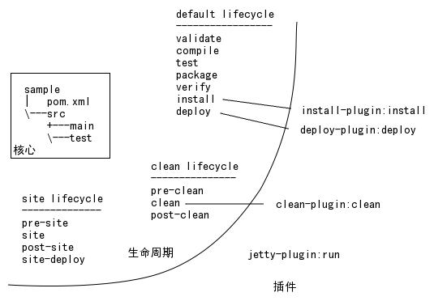

金立基础框架
Table of Contents
- 1 简介
- 2 系统架构
- 3 展现层
- 4 应用层
- 5 集成层
- 6 代码规范
- 7 系统开发
- 8 系统测试
- 9 系统部署
- 10 开发工具介绍
- 11 核心系统介绍
1 简介
GNIF 全称为 Gionee Infrastructure Framework，中文名：金立基础框架。GNIF 的核心是定义一套规范，在系统、前后台、模块上将代码进行隔离，实现各个层面的解耦。以达到降低技术复杂度，提升代码可重用的目的。
基于 GNIF 规范提供的基础代码包括：
- 核心系统(war)
- 集中认证系统(CAS/AUTH)
- 认证与授权管理系统(UAAM)
- 工作流平台(GNIFLOW)
- 用户中心(EOA)
- 报表平台
- 核心模块(jar)
- 模块基础包(gnif-core.jar)
- 用户授权模块(gnif-auth.jar)
- 开发工具
- 项目原型(gnifweb)
- 开发支持包(devtool)
核心系统将系统中通用的功能抽取出来作为公共系统。如，一个系统通常会涉及到认证（登录）、授权（将用户放入session）、工作流（解决系统间的交互）等功能。在核心系统的作用之下，各业务系统不需要再开发这些模块。这样可以整体减少系统的开发工作量。
核心模块将系统中经常用到的获取用户包括用户组织架构、用户权限，访问应用容器中对象等常用操作抽取出来，供业务系统调用。业务系统代码可以只关注业务运算，复杂的技术细节交给核心模块。这样可以实现各业务系统共享常用操作，业务系统代码得到简化的目标。
本文档将详细介绍 GNIF 框架，读者通过本文档可以全面了解框架，能够使用框架进行开发，并根据规范在适当的系统、模块对框架进行扩展。
2 系统架构
2.1 隔离与解耦
解决软件复杂度的主要方式就是隔离。将一个复杂的软件有效地分割，可以让每个被分割的部分所涉及的功能更加专一，该功能所涉及的开发与维护也会相应地更加专一。这样可以让开发与维护工作更加简单。隔离的目的就是为了解耦，解耦的结果就是：被隔离的功能专一。
有效的隔离才能实现解耦，无效的隔离不仅不能解耦，通常会导致大量的时间浪费的同时并不能带来软件开发、运维效率上的提升。GNIF 从系统级隔离、软件分层、软件分模块等三个方面来进行系统隔离。系统级隔离，将通用系统功能分离出来作为单独的系统，包括用户认证，用户授权等系统；软件分层，将软件从前端到后端分为展现层、应用层、集成层；软件分模块，在软件分层的基础上，将各层的功能按模块独立出来。
2.2 系统级隔离
在传统软件开发过种中,通常每开发一个系统,都需要写用户管理、用户登录等内容。一些快速开发平台将用户管理、用户授权等内容集成在平台内部，开发人员在平台的项目原型中可以直接得到用户管理、权限管理的代码。这在一定程度上减少了开发量。在 GNIF 中，用户管理、权限管理作为一个单独的基础系统存在。这样做的优势在于，用户管理系统进一步与业务系统解耦。用户管理系统的开发与维护对业务系统的影响很小。这种层面的隔离即系统级隔离。
系统级隔离是将通用业务功能开发为单独的系统。系统与系统之间通过远程调用，API等方式进行数据交互。
以下功能可以开发成单独系统：
- 用户认证与授权管理系统(UAAM) 该系统提供各业务系统的用户管理功能。所有业务系统的用户管理都由该系统来完成。系统包括：用户新增、用户密码设定、用户权限设置等功能。
- 集中认证服务(CAS) 该服务提供业务系统的登录认证功能。所有业务系统通过该系统进行登录认证。通过该服务可以完成单点登录功能。
- 工作流平台(FP) 该平台提供系统与系统之间的数据交互机制，业务系统之间可以通过该平台完成需要协作处理的功能。
2.3 软件分层
分层概念在软件开发的过程中就一直存在。如，CPU指令(汇编语言)/C语言/Java语言 都是由高级语言调用低级语言。GNIF 的分层是指，由展现层、应用层、集成层三层组成的分层结构。分层要求调用只能由高层调用低层代码，低层不得调用高层代码。
- 展现层：负责与用户交互，具体包括从应用层取数据显示到用户端，从用户端获取数据传给应用层完成业务逻辑。
- 应用层：负责完成数据业务处理。
- 集成层：负责业务数据与第三方交互。如，数据的持久化。
软件分层之下，高层调用低层代码时，低层代码需要提供接口给高层代码。低层可以根据接口来开发不同的实现。如，展现层通过 Controller 调用 Service 接口，如果 Service 的实现发生改变，也不会影响 Controller 的调用。
2.4 模块级隔离
模块级隔离建立在分层基础上，指在某一个或者几个分层中，能够独立完成特定功能的代码，将其隔离。如，用户管理，是基于应用层与集成层提供的完成用户管理的代码模块。工作流(activiti)是基于应用层提供的完成工作流功能的代码模块。
2.5 包结构
基于 GNIF 开发的内容分为两类：
- web 项目。以 war 包的形式存在。用于对终端用户提供基于浏览器访问的服务
- 服务组件。以 jar 包的形式存在。用于对开发人员提供 API，简化开发，提升代码可重用性
GNIF 开发的两种类型项目，均以 com.gionee.项目名 为包名。
2.5.1 web 项目目录结构
- com.gionee.projectname 项目包名
- web 展现层
- controller 控制器
- response JSON响应对象
- util 工具类，用于转换数据
- biz 应用层
- service 服务接口
- service.impl 服务实现类
- model 数据模型
- integration 集成层
- dao 数据访问对象
- sao 服务访问对象
- constant 常量
- web 展现层
2.5.2 服务组件目录结构
- com.gionee.projectname 项目包名
- XxxService 服务接口定义
- YyyService 服务接口定义
- ProjectConfig 服务配置文件定义
- impl 服务实现
- XxxServiceImpl
- YyyServiceImpl
- model 服务对应的数据模型
- util 服务所用到的工具类
- dao 服务所用到的数据访问对象
- constant 常量
3 展现层
3.1 MVC 介绍
MVC 是当前 WEB 开发的主要模式。过去的开发将业务逻辑、接受用户数据、展现用户数据等操作放在一起（如：放在一个 JSP 文件中），导致代码的重用程度不高、维护难度大。MVC 模式正是为着解决这个问题而产生的。
MVC 将代码分为三个模块：
- Model：业务模型，用于处理业务逻辑。
- View：视图，用于展现数据给用户。
- Controller：控制器，用于接收用户数据并协调 Model 完成业务逻辑处理。
从 GNIF 的分层而言，GNIF 的 Web 曾采用 Spring MVC。基于 Spring MVC，GNIF 的三层为：
- Model：以 Service 为接口的后端代码，即 biz、integration 中的代码
- View：采用 Freemarker 作为视图展现方案
- Controller：即 Spring MVC 中的 Controller
3.2 安全与权限
3.2.1 基于 GNIF 框架的配置
GNIF 的 WEB 项目基于 CAS 登录。WEB 项目在认证与授权由 spring-security1 接管。配置 spring-security 主要是 web.xml 及 security-context.xml。在 security-context.xml 中引入了外部属性配置文件，从 app.properties 中可以看到配置样例。
3.2.1.1 web.xml
<?xml version="1.0" encoding="ISO-8859-1"?> <web-app xmlns="http://java.sun.com/xml/ns/javaee" xmlns:xsi="http://www.w3.org/2001/XMLSchema-instance" xsi:schemaLocation="http://java.sun.com/xml/ns/javaee http://java.sun.com/xml/ns/javaee/web-app_2_5.xsd" version="2.5"> <!-- 配置权限过滤器 --> <filter> <filter-name>springSecurityFilterChain</filter-name> <filter-class>org.springframework.web.filter.DelegatingFilterProxy</filter-class> </filter> <filter-mapping> <filter-name>springSecurityFilterChain</filter-name> <url-pattern>/*</url-pattern> </filter-mapping> <!-- 配置加载 spring 容器的监听器 --> <listener> <listener-class>org.springframework.web.context.ContextLoaderListener</listener-class> </listener> <!-- 配置加载 spring 窗口时需要读取的配置文件 --> <context-param> <param-name>contextConfigLocation</param-name> <param-value>/WEB-INF/biz-context.xml,/WEB-INF/security-context.xml</param-value> </context-param> </web-app>
3.2.1.2 security-context.xml
<beans:beans xmlns="http://www.springframework.org/schema/security" xmlns:beans="http://www.springframework.org/schema/beans" xmlns:xsi="http://www.w3.org/2001/XMLSchema-instance" xmlns:context="http://www.springframework.org/schema/context" xsi:schemaLocation="http://www.springframework.org/schema/beans http://www.springframework.org/schema/beans/spring-beans-3.0.xsd http://www.springframework.org/schema/context http://www.springframework.org/schema/context/spring-context.xsd http://www.springframework.org/schema/security http://www.springframework.org/schema/security/spring-security-3.1.xsd"> <!-- 属性配置文件 --> <context:property-placeholder location="classpath:app.properties"/> <!-- 不需要拦截的URL --> <http security="none" pattern="/index.html"></http> <!-- 需要进行拦截的URL --> <http pattern="/**" entry-point-ref="casEntryPoint"> <custom-filter ref="requestSingleLogoutFilter" before="LOGOUT_FILTER"/> <custom-filter ref="singleLogoutFilter" before="CAS_FILTER"/> <custom-filter ref="casFilter" position="CAS_FILTER" /> <custom-filter ref="gnifFilterSecurityInterceptor" before="FILTER_SECURITY_INTERCEPTOR" /> <logout logout-success-url="/cas-logout.jsp"/> </http> <!-- 退出登录发送器，用于向 CAS 发送用户的单点退出请求 --> <beans:bean id="requestSingleLogoutFilter" class="org.springframework.security.web.authentication.logout.LogoutFilter"> <beans:constructor-arg value="${cas.logout.url}"/> <beans:constructor-arg> <beans:bean class="org.springframework.security.web.authentication.logout.SecurityContextLogoutHandler"/> </beans:constructor-arg> <!-- 页面的退出按钮使用以下URL --> <beans:property name="filterProcessesUrl" value="/j_spring_cas_security_logout"/> </beans:bean> <!-- 单点退出过滤器，用于清空 session --> <beans:bean id="singleLogoutFilter" class="com.gionee.gnif.web.GnifSingleSignOutFilter"/> <!-- 授权拦截器，根据用户的权限，对请求的 URL 进行拦截 --> <beans:bean id="gnifFilterSecurityInterceptor" class="com.gionee.auth.security.FilterSecurityInterceptorImpl"> <beans:property name="securityMetadataSource"> <beans:bean class="com.gionee.auth.security.InvocationSecurityMetadataSourceImpl" /> </beans:property> <beans:property name="authenticationManager" ref="authenticationManager"/> <beans:property name="accessDecisionManager"> <beans:bean class="com.gionee.auth.security.AccessDecisionManagerImpl"/> </beans:property> </beans:bean> <!-- 用户信息服务，在用户登录时，从数据库取出登录用户的权限放入 session --> <beans:bean id="userDetailService" class="com.gionee.auth.security.cas.CasUserDetailsServiceImpl" /> <!-- CAS 过滤器，用户认证通过该主类来完成 --> <beans:bean id="casFilter" class="org.springframework.security.cas.web.CasAuthenticationFilter"> <beans:property name="authenticationManager" ref="authenticationManager"/> </beans:bean> <!-- 认证管理类，管理认证方式，当前使用的认证方式为通过 CAS 进行认证 --> <authentication-manager alias="authenticationManager"> <authentication-provider ref="casAuthenticationProvider" /> </authentication-manager> <!-- CAS 认证配置，通过该类访问 CAS 确认用户是否已经登录 --> <beans:bean id="casAuthenticationProvider" class="org.springframework.security.cas.authentication.CasAuthenticationProvider"> <beans:property name="authenticationUserDetailsService"> <beans:bean class="org.springframework.security.core.userdetails.UserDetailsByNameServiceWrapper"> <beans:constructor-arg ref="userDetailService" /> </beans:bean> </beans:property> <beans:property name="serviceProperties" ref="serviceProperties" /> <beans:property name="ticketValidator"> <beans:bean class="org.jasig.cas.client.validation.Cas20ServiceTicketValidator"> <beans:constructor-arg index="0" value="${cas.auth.url}" /> </beans:bean> </beans:property> <beans:property name="key" value="an_id_for_this_auth_provider_only"/> </beans:bean> <!-- 与 CAS 交互时需要传递的属性 --> <beans:bean id="serviceProperties" class="org.springframework.security.cas.ServiceProperties"> <beans:property name="service" value="${base.path}j_spring_cas_security_check"/> <beans:property name="sendRenew" value="false"/> </beans:bean> <!-- 用户认证重定向配置，如果用户在当前系统需要登录，会根据以下配置重定向到 CAS 进行登录认证 --> <beans:bean id="casEntryPoint" class="org.springframework.security.cas.web.CasAuthenticationEntryPoint"> <beans:property name="loginUrl" value="${cas.login.url}"/> <beans:property name="serviceProperties" ref="serviceProperties"/> </beans:bean> </beans:beans>
3.2.1.3 app.properties
base.path=http://localhost:8080/project_name # CAS 服务器登录地址 cas.login.url=http://192.168.0.96/cas/login # CAS 服务器退出登录地址 # 如果加上 redirect 参数，则退出登录之后再登录会进入到参数指定的 URL # 如果不加 redirect 参数，则退出登录之后，再登录会进入默认成功界面(EOA) cas.logout.url=http://192.168.0.96/cas/logout?redirect=localhost:8080/ # CAS 服务器校验地址 cas.auth.url=http://192.168.0.96/cas
3.2.2 不使用 GNIF 框架的配置
部分早期开发的项目没有使用 GNIF 框架，也可以与 CAS 集成实现单点登录。需要在 web.xml 中配置过滤器。再写一个授权过滤器的实现类即可。
3.2.2.1 web.xml
所配置的过滤器有顺序区分，应当将以下所示的所有过滤器按顺序放在最前面，然后再放置业务系统所使用的过滤器。
<?xml version="1.0" encoding="ISO-8859-1"?> <web-app xmlns="http://java.sun.com/xml/ns/javaee" xmlns:xsi="http://www.w3.org/2001/XMLSchema-instance" xsi:schemaLocation="http://java.sun.com/xml/ns/javaee http://java.sun.com/xml/ns/javaee/web-app_2_5.xsd" version="2.5"> <!-- 用于单点退出，该过滤器用于实现单点登出功能，可选配置--> <listener> <listener-class>org.jasig.cas.client.session.SingleSignOutHttpSessionListener</listener-class> </listener> <!-- 该过滤器用于实现单点登出功能，可选配置。 --> <filter> <filter-name>CAS Single Sign Out Filter</filter-name> <filter-class>org.jasig.cas.client.session.SingleSignOutFilter</filter-class> </filter> <filter-mapping> <filter-name>CAS Single Sign Out Filter</filter-name> <url-pattern>/*</url-pattern> </filter-mapping> <!-- 该过滤器负责用户的认证工作，必须启用它 --> <filter> <filter-name>CASFilter</filter-name> <filter-class>org.jasig.cas.client.authentication.AuthenticationFilter</filter-class> <init-param> <!-- CAS 服务器登录地址 --> <param-name>casServerLoginUrl</param-name> <param-value>http://192.168.0.96/cas/login</param-value> </init-param> <init-param> <!-- 当前系统地址 --> <param-name>serverName</param-name> <param-value>http://localhost:8080</param-value> </init-param> </filter> <filter-mapping> <filter-name>CASFilter</filter-name> <url-pattern>/*</url-pattern> </filter-mapping> <!-- 该过滤器负责对Ticket的校验工作，必须启用它 --> <filter> <filter-name>CAS Validation Filter</filter-name> <filter-class>org.jasig.cas.client.validation.Cas20ProxyReceivingTicketValidationFilter</filter-class> <init-param> <!-- CAS 服务器地址 --> <param-name>casServerUrlPrefix</param-name> <param-value>http://192.168.0.96/cas</param-value> </init-param> <init-param> <!-- 当前系统地址 --> <param-name>serverName</param-name> <param-value>http://localhost:8080</param-value> </init-param> </filter> <filter-mapping> <filter-name>CAS Validation Filter</filter-name> <url-pattern>/*</url-pattern> </filter-mapping> <!-- 该过滤器负责实现HttpServletRequest请求的包裹， 比如允许开发者通过HttpServletRequest的getRemoteUser()方法获得SSO登录用户的登录名，可选配置。 --> <filter> <filter-name>CAS HttpServletRequest Wrapper Filter</filter-name> <filter-class> org.jasig.cas.client.util.HttpServletRequestWrapperFilter</filter-class> </filter> <filter-mapping> <filter-name>CAS HttpServletRequest Wrapper Filter</filter-name> <url-pattern>/*</url-pattern> </filter-mapping> <!-- 该过滤器使得开发者可以通过org.jasig.cas.client.util.AssertionHolder来获取用户的登录名。 比如AssertionHolder.getAssertion().getPrincipal().getName()。 --> <filter> <filter-name>CAS Assertion Thread Local Filter</filter-name> <filter-class>org.jasig.cas.client.util.AssertionThreadLocalFilter</filter-class> </filter> <filter-mapping> <filter-name>CAS Assertion Thread Local Filter</filter-name> <url-pattern>/*</url-pattern> </filter-mapping> <!-- 自动根据单点登录的结果设置本系统的用户信息 --> <filter> <display-name>UserInitializeFilter</display-name> <filter-name>UserInitializeFilter</filter-name> <filter-class>com.gionee.casclient.UserInitializeFilter</filter-class> </filter> <filter-mapping> <filter-name>UserInitializeFilter</filter-name> <url-pattern>/*</url-pattern> </filter-mapping> </web-app>
3.2.2.2 UserInitializeFilter.java
package com.gionee.casclient; import java.io.IOException; import javax.servlet.Filter; import javax.servlet.FilterChain; import javax.servlet.FilterConfig; import javax.servlet.ServletException; import javax.servlet.ServletRequest; import javax.servlet.ServletResponse; import javax.servlet.http.HttpServletRequest; import org.jasig.cas.client.validation.Assertion; public class UserInitializeFilter implements Filter { public UserInitializeFilter() { } public void destroy() { } /** * 过滤逻辑：首先判断单点登录的账户是否已经存在本系统中， 如果不存在使用用户查询接口查询出用户对象并设置在Session中 * * @see Filter#doFilter(ServletRequest, ServletResponse, FilterChain) */ public void doFilter(ServletRequest request, ServletResponse response, FilterChain chain) throws IOException, ServletException { HttpServletRequest httpRequest = (HttpServletRequest) request; // _const_cas_assertion_是CAS中存放登录用户名的session标志 Object object = httpRequest.getSession().getAttribute("_const_cas_assertion_"); // 如果当前系统中，用户在 SESSIOIN 中不存在 if (httpRequest.getSession().getAttribute("SYSUSER") == null) { Assertion assertion = (Assertion) object; System.out.println("=========== Login Account : " + assertion.getPrincipal().getName()); // init user // session.addAttribute("SYSUSER", user); } chain.doFilter(request, response); } public void init(FilterConfig fConfig) throws ServletException { } }
3.2.2.3 退出操作
退出操作，应当在一个处理类中清空 session，然后将页面重定向到 CAS 退出登录地址。如：
http://192.168.0.96/cas/logout?redirect=localhost:8080/
如果带有 redirect 参数，则再登录时会重新进入当前系统。不带有 redirect 参数则重登录时进入默认系统(EOA)
3.2.3 在页面中获取用户资源
页面中获取用户的资源，主要通过 resource 函数来获取。
- resource('CODE') 获取当前用户的编码为 "CODE" 的资源。如果当前用户不能访问该资源，返回 null
- resource('CODE', "mp") 获取当前用户的编码为 "CODE" 的子资源，子资源只限菜单与页面，如果当前用户不能访问子资源，返回一个长度为 0 的 list
resource() 的第一个参数为资源编码或者资源ID，第二个参数为子资源类型。只有指定第二个参数，才查询子资源。第二个参数为标志位，含义如下：
- m: 菜单
- p: 页面
- b: 按钮
- a: 区域
- r: 资源
为方便页面使用，定义了以下 FreeMarker 宏。
<#macro menuinternal items>
<#list items as item>
<#if item.page>
<li><span><a turl="${item.url}">${item.name}</a></span></li>
<#elseif item.leaf>
<li><span>${item.action}</span></li>
<#else>
<li><span>${item.name}</span>
<ul>
<@menuinternal item.child />
</ul>
</li>
</#if>
</#list>
</#macro>
<#macro menu code>
<@menuinternal resource(code, "mp") />
</#macro>
<#macro toolbar code>
toolbar: [<#list resource(code, "b") as item>{text:'${item.name}',iconCls:'${item.icon!""}',handler:${item.action!""}}<#if item_has_next>,</#if></#list>]
</#macro>
使用以上定义的宏，可以简化页面代码，如，菜单显示代码可以写成：
<ul id="menu" class="easyui-tree"> <@menu "ROOT" /> </ul>
表格(datagrid)的按钮可以写成：
dg.datagrid({
url: 'user.json',
<@toolbar "USER" />
});
3.3 JavaScript 与 jQuery
3.3.1 递归一个列表
ar = ['green', 'red', 'blue']; $.each(ar, function(index, data) { console.log(index, data); }); // index: 当前列表下标 // data : 对应的数据
3.3.2 使用局部变量
$(function() { // 以下两个变量的作用域被限制在当前函数体内 // 外部无法访问这里定义的变量 var table = $('#table'); var button = $('#submit'); // 在当前函数体内，可以使用定义的变量 table.html('<tr><td></td></tr>'); // 在当前函数体的函数内，也可以使用定义的变量 function innerfunc() { table.html('<tr><td>From innerfunc</td></tr>'); } });
3.3.3 使用闭包
闭包是一个包含引用环境的函数。在 JavaScript 中，可以创建一个函数，这个函数建立一个变量引用环境。如：
// 创建闭包的函数 function createClosure() { var inc = 0; // 这个要返回的函数就是闭包，该函数引用了一个外部变量 inc // 即包含了一个引用，从而形成一个函数环境 return function() { return ++inc; } } // 通过函数创建闭包 var inc = createClosure(); // 使用闭包 console.log(inc()); // 1 console.log(inc()); // 2
通过以上代码，可以知道闭包的具体存在形式。以下再举一个递归的例子：
function createSum(range) { var i = 1; var total = 0; return function sum() { if (i > range) { return total; } else { total += i++; return sum(); } } } var sum100 = createSum(100); console.log(sum100()); // 5050 var sum36 = createSum(36); console.log(sum36()); // 666
3.4 使用 Easy UI 的开发
EasyUI4 是基于 jQuery3 开发的 UI 框架。EasyUI 对通用 web 组件进行了封装，开发人员可以使用少量代码就写出标准规范的界面。 目前中使用较多的是 EasyUI 的布局、提示框、弹出框、表格、树状结构等组件，以下将对这些组件进行介绍。同时，还要介绍 JavaScript 与 EasyUI 如何进行最佳实践。
3.4.1 html 头部
使用 EasyUI 需要引入依赖的 js, css，需要在 html 头部加入以下代码：
<link rel="stylesheet" type="text/css" href="css/themes/default/easyui.css"/> <link rel="stylesheet" type="text/css" href="css/themes/icon.css"/> <link rel="stylesheet" type="text/css" href="css/gnif.css"/> <script type="text/javascript" src="js/jquery.min.js"></script> <script type="text/javascript" src="js/jquery.easyui.min.js"></script> <script type="text/javascript" src="js/locale/easyui-lang-zh_CN.js"></script> <script type="text/javascript" src="js/jquery.edatagrid.js"></script> <script type="text/javascript" src="js/gnif.js"></script>
其中，gnif.css, gnif.js 分别包含基于 gnif 框架的样式及工具类。这些样式及工具类可以为界面开发提供便利。
3.4.2 布局
EasyUI 的布局主要通过 layout 组件来完成。layout 可以进行嵌套。在开发中，每一个 layout 都要设置 fit:true，这样可以让 layout 能够根据游览器自适应大小。为了配合布局，还使用 tab 组件。一个典型的页面布局如下：
<body class="easyui-layout"> <div data-options="region:'north',border:false" style="height:30px;background:#eeeeff;"> </div> <div data-options="region:'west',border:false,split:true,title:'操作菜单'" style="width:200px;margin-left:10px;" id="itsm-menu"> <ul id="gnif-menu" class="easyui-tree"> <li><span>操作菜单</span> <ul> <li><span><a turl="main/index.html">操作页面</a></span></li> </ul> </li> </ul> </div> <div data-options="region:'center',border:false"> <div id="gnif-tab" class="easyui-tabs" data-options="fit:true,border:false,plain:true"> <div title="首页" data-options="closable:true,fit:true" href="common/welcome.html"> <div class="easyui-layout" data-options="fit:true"> <div data-options="region:'north',border:false" style="width:200px;padding:10px;"> </div> <div data-options="region:'center',border:false"> </div> </div> </div> </div> </div> </body>
使用该布局需要注意以下几点：
- gnif-menu 是基于 gnif 框架的菜单，使用该 ID 的菜单时，其中的 a 标签可以通过 turl 来指定通过 tab 打开的页面 URL 地址
- gnif-tab 是基于 gnif 框架的标签页，使用 gnif.opentab(title, url) 可以打开 gnif-tab 对应的标签
- turl 指定的页面在加载完成之后，会从 body 截取内容，不会包含页面的 head 部分。如果 tab 加载的页面需要包含其它 js/css，应当在该布局文件中将这些 js/css 包含
3.4.3 简单 CRUD 操作
<table id="user-dg"></table> <div id="user-dlg" class="easyui-dialog" data-options="closed:true" style="width:580px;height:480px;padding:10px;"> <form id="user-fm" method="post"> <input type="hidden" name="id"> <div class="ftitle"><label>基本信息</label></div> <div class="fitem"><label>姓名</label><input name="code" type="text" class="easyui-validatebox" data-options="required:true" /></div> <div class="fitem"><label>性别</label><input name="gender" type="text" class="easyui-combobox" data-options="required:true,data:[{text:'男',value:'1'},{text:'女',value:'0'}]"></div> <div class="litem"><label>地址</label><input name="address" type="text" class="easyui-validatebox" data-options="required:true" /></div> <div class="ftitle"><label>家庭信息</label>在紧急情况下可能需要联系亲人</div> <div class="fitem"><label>紧急联系人</label><input name="contact" type="text" class="easyui-validatebox" data-options="" /></div> <div class="fitem"><label>电话</label><input name="telephone" type="text" class="easyui-validatebox" data-options="" /></div> </form> </div> <script type="text/javascript"> $(function() { var dg = $('#user-dg'); var dgh = gnif.create_dgh({ en: '用户', dg: dg, fm: $('#user-fm'), dlg: $('#user-dlg'), lu: 'user/load.json', su: 'user/save.json' }); dg.datagrid({ url: 'app/all.json', fit: true, rownumbers: true, singleSelect: true, columns: [[ {field:'id',checkbox:true}, {field:'name',title:'姓名'} ]], toolbar: [ {text: '新增', handler: dgh.create}, {text: '编辑', handler: dgh.edit}, {text: '删除', handler: dgh.remove} ] }); }); </script>
3.4.4 表单提交时 IE 提示下载
基于 EasyUI 的表单提交，返回数据后，在 IE 下会提示下载文件。以下是解决该问题的方案
在 Controller 当中，指定请求的地址后缀为 .html，并在响应方法上加上 @ResponseBody 标签，指示 Controller 的方法不返回视图而是返回数据对象
@RequestMapping("/save.html") @ResponseBody public MessageResponse save(GioneeApp gioneeApp) { appService.save(gioneeApp); return new MessageResponse(MessageConstant.SUCCESS); }
在 form submit 的 success 方法里面，使用 eval 将返回的字符串转化为 json 对象
function submitform() { $('#form').form('submit', { url: 'save.html', success: function(data) { data = eval('(' + data + ')'); $.messager.alert('提示', data.message); } }); }
IE 下，form 表单提交后，可以接受的响应 Content-Type 是 text/html，在 web-context.xml 指定 text/html 响应由 Json 转换器来处理即可：
<mvc:annotation-driven> <mvc:message-converters> <!-- Json 转换器，将 Controller 对象转换为 Json 数据格式 --> <bean class="org.springframework.http.converter.json.MappingJackson2HttpMessageConverter"> <property name="objectMapper"> <bean class="com.gionee.gnif.util.GnifObjectMapper" /> </property> <property name="supportedMediaTypes"> <list> <!-- 设置支持返回Content-Type，如果浏览器请求头指定可接受的 Content-Type 为以下类型，则使用当前转换器 --> <value>text/html;charset=UTF-8</value> <value>application/json;charset=UTF-8</value> </list> </property> </bean> </mvc:message-converters> </mvc:annotation-driven>
3.4.5 重复提交控制
function submitform() { $.messager.progress(); $('#form').form('submit', { url: 'save.html', onSubmit: function() { var isValid = $(this).form('validate'); if (!isValid) { $.messager.progress('close'); } return isValid; }, success: function(data) { $.messager.progress('close'); } }); }
通过 EasyUI 的 $.messager.progress() 来处理重复提交的问题。在用户点击提交之后，页面弹出进度框，用户无法做任何操作。在校验表单出错，或者提交得到响应的时候，关闭进度框。
3.5 使用 FreeMarker
FreeMarker5 是一个模板引擎，GNIF 使用 FreeMarker 代替传统的 JSP 作为视图展示层技术。FreeMarker 相对于 JSP 而言有以下优势：
- 完成相同的功能，所需要的代码量减少
- 自定义标签相对简单
- 强制视图中不写业务逻辑代码
3.5.1 入门知识
3.5.1.1 获取变量值
${user.name}
${user.age}
3.5.1.2 条件判断
<#if test??> test is true. </#if> <#if test??> test is true. <#else> test is false. </#if> <#if testa??> testa is true. <#elseif testb??> testb is true. <#elseif testc??> testc is true. <#else> all is false. </#if>
3.5.1.3 循环列表
<#list [1,2,3,4] as x>
${x}
</#list>
<#list [1,2,3,4] as x>
${x}<#if x_has_next>,</#if>
</#list>
3.5.2 常见用法
3.5.2.1 获取 Request 参数
获取名称为 name 的 Request 参数：${RequestParameters.name}
3.5.2.2 处理 null 值
如果使用 FreeMarker 处理的值为 null，FreeMarker 会抛出异常。可以通过以下方式来处理 null 值。
! 是默认值操作符
${value!"如果为null，则使用默认值"}
?? 测试值是否存在（是否为 null）
<#if value??>
Value: ${value}
<#else>
Value not found.
</#if>
3.5.2.3 判断是否为空(null,empty)
<#if value?has_content>
Value: ${value}
<#else>
Value is empty
</#if>
判断是否为空时，会检查 null，并且检查 length/size 是否为 0
3.5.2.4 自定义宏（标签）
定义宏 <#macro button id name> <a id="${id}" href="#" class="easyui-linkbutton">${name}</a> </#macro> 使用宏 <@button "id" "测试按钮" />
3.6 Java代码
WEB 展现层的代码都放在 com.gionee.projectname.web 包下。该包有以下目录：
- controller 控制器。具体职责包括：
- 接收浏览器提交的数据
- 将数据进行输入与输出的转换
- 调用服务层代码进行业务逻辑操作
- 将数据汇集传给视图进行展示
- 将数据汇集直接返回给浏览器
- response 响应类。将模型数据(model)包装为响应类以 json 的形式返回给浏览器。这样做的原因：
- 只将页面需要的数据返回给客户端，减少传输的数据量
- 不将 model 完整地在前端暴露，保持安全可控
- model 可以写更加复杂的业务逻辑代码，不限于简单的 get/set 方法，增强代码的灵活性
- util 工具类。将通用数据转换、数据处理的功能放在这个包里面，在 controller 里面可以共用这部分代码
- interceptor 拦截器。可以在 controller 处理之前，之后加上拦截器代码
3.6.1 Controller 控制器
3.6.1.1 默认地址映射
在一个项目中，并不是所有的页面都需要通过业务操作取出数据之后再将页面展现给客户端。如，登录页面，用户表单提交页面等，都是作为一个数据录入页面将需要用户填写的数据展现给用户，并不需要通过业务操作(访问应用层)取出数据放到页面展示。这种情况下，可以使用页面转发控制器将页面直接转发到视图。在项目原型阶段，这种没有在业务逻辑处理之后展现的页面更多。
基于 GNIF 框架的 Controller，默认由 ParameterizableViewController 直接将对应的 URL 映射到 URL 所对应的视图。使用 ParameterizableViewController 转发视图的配置可以自定义：
<!-- 设置转发Controller 处理的 URL。如果一个 URL 没有找到对应的 Controller 处理，则由转发 Controller 直接取 URL 对应的视图返回给浏览器 --> <mvc:view-controller path="/" view-name="home" /> <mvc:view-controller path="/index.html" view-name="index" /> <!--如果没有设置 view-name，则使用默认 URL-视图 映射方式找到视图 --> <mvc:view-controller path="/**/*.html" />
默认的视图映射方式由以下代码来确定，可以通过代码查看工具查看实现细节：
public class DispatcherServlet extends FrameworkServlet { private void applyDefaultViewName(HttpServletRequest request, ModelAndView mv) throws Exception { if (mv != null && !mv.hasView()) { mv.setViewName(getDefaultViewName(request)); } } protected String getDefaultViewName(HttpServletRequest request) throws Exception { return this.viewNameTranslator.getViewName(request); } }
默认的视图映射方式，实际上就是将请求的 URL 的后缀去掉，得到视图名称。
3.6.1.2 自定义地址映射
如果一个视图需要进行业务处理之后再返回数据给客户端浏览器，基于 GNIF 框架的做法如下：
// 用 RequestMapping 指定需要处理的 URL 地址 @RequestMapping("/app") // 指定该类是一个 Controller，spring 扫描到 Controller 注解后会将 Controller 加入到 spring 容器中去 @Controller public class GioneeAppController { // 注入服务，Controller 通过调用服务完成业务操作 // Controller 自身不做业务操作 @Autowired private GioneeAppService appService; // 指定第二级 URL 地址，该级地址与第一级 URL 地址构成完整的业务响应地址。 // 如当前响应地址为 /app/save.html，如果客户端发起一个请求为该地址 // 则由 save 方法进行响应 @RequestMapping("/save.html") // 使用 ResponseBody 指定返回的数据不由视图处理器进行渲染，而由消息转换器将数据作为消息返回给客户端 @ResponseBody public MessageResponse save(GioneeApp gioneeApp, DbConfig dbConfig) { if (dbConfig.isValid()) { gioneeApp.setDbInfo(dbConfig.getEncrypt()); } appService.save(gioneeApp); return new MessageResponse(MessageConstant.SUCCESS); } @RequestMapping("/list.html") // 如果没有 ResponseBody，则由视图对数据进行渲染。 // 需要将数据放入到 model 当中，在视图中可以通过 model 取到数据进行展现 public void list(Model model) { model.addAttribute("apps", appService.getAll()); } }
3.6.1.3 接收客户端提交参数
在 Controller 中的处理方法中可以指定各种类型的参数类型。部分参数类型具有特殊含义：
- Model 用于存放 model，在视图中可以获取该对象当中的值
- QueryMap 用于存放查询条件，查询条件已经完成了数值类型转换
- HttpServletRequest/HttpServletResponse 访问Servlet中的 request/response
可以在 Spring Controller 中查看完整的预定义参数类型。
除了预定义参数类型，可以在 Controller 通过参数将对象初始化。以下为一个 form 表单：
<form method="post" action="handle.html" enctype="multipart/form-data"> <input type="hidden" name="name" /> <input type="hidden" name="age" /> <input type="hidden" name="address[0].name" /> <input type="hidden" name="address[1].name" /> <!-- 多个子对象 --> <input type="file" name="avatar" /> <input type="file" name="pic[0]" /> <input type="file" name="pic[1]" /> <input type="file" name="pic[2]" /> <!-- 多个文件以 List 的形式上传 --> <input type="file" name="files" /> <input type="file" name="files" /> <input type="file" name="files" /> <!-- 多个文件上传 --> <input type="hidden" name="friends" value="1,2,3,4" /> <!-- 整形数组 --> <input type="submit" /> </form>
Java 代码如下：
@Controller public class HandleController { @RequestMapping("/handle.html") @ResponseBody public String handle(User user, @RequestParam("files") MultipartFile[] files) { System.out.println(user); System.out.println(files); return "Hello"; } } public class User { private String name; private String age; private List<Address> address = new ArrayList<Address>(); // 接收 private MultipartFile avater; // 接收单个文件 private List<MultipartFile> pic = new ArrayList<MultipartFile>(); // 接收文件列表 private Integer[] friends; // 接收数组参数 // getter and setter's } public class Address { private String name; // getter and setter's }
3.6.1.4 查询数据
通过 QueryMap 可以接收用于查询的数据。 QueryMap 做了以下事情：
- 根据提交数据的后缀，对数据类型进行转换：
- _s: String
- _i: Integer
- _f: Double
- _d: Date 提交的时间格式为 yyyy-MM-dd
- _da: Date 时分秒为 00:00:00
- _db: Date 时分秒为 23:59:59
- _t: Date 提交的时间格式为 yyyy-MM-dd HH:mm:ss
- 设置分页变量
- firstResult 起始结果集 // 用于 mysql, postgresql, h2 等使用 limit 的数据源
- maxResults 每页条数
- firstRow 第一条记录 // 用于 oracle, db2, mssql 等使用 rownumber() 的数据源
- lastRow 最后一条记录
- pageRow 每页条数 // 第一版兼容变量
- rowFrom 起始行
- rowTo 结束行
页面提交的查询条件代码如下：
<form> 姓名：<input type="text" name="name_s" /> 年龄：<input type="text" name="age_i" /> 出生时间：<input type="text" name="borthday_d" /> <input type="button" value="查询" /> </form>
数据库查询时，将类型后缀去掉。数据库查询代码如下：
<select id="getAll" parameterType="Map" resultMap="result"> select name, account, borthday from user <where> <if test="name != null"> and name like '%' + #{name} + '%' </if> <if test="age != null"> and age = #{age} </if> </where> </select>
3.6.1.5 文件上传
文件上传时，需要指定表单的类型为：multipart/form-data
<form method="post" action="handle.html" enctype="multipart/form-data"> <input type="file" name="avatar" /> </form>
在 Controller 中，如果需要在处理方法参数中直接获取文件数组，需要加上 @RequestParam 标签：
@Controller public class HandleController { @RequestMapping("/handle_array.html") @ResponseBody public String handleArray(@RequestParam("avatar") MultipartFile[] avatar) { System.out.println(avatar); return "Hello"; } @RequestMapping("/handle_single.html") @ResponseBody public String handleSingle(MultipartFile avatar) { System.out.println(avatar); return "Hello"; } }
3.7 配置文件
WEB 层的配置文件集中于 web-context.xml 中。在 web.xml 中配置 DispatcherServlet 时，指定该 DispatcherServlet 所读取的配置文件。
web.xml
<?xml version="1.0" encoding="ISO-8859-1"?> <web-app xmlns="http://java.sun.com/xml/ns/javaee" xmlns:xsi="http://www.w3.org/2001/XMLSchema-instance" xsi:schemaLocation="http://java.sun.com/xml/ns/javaee http://java.sun.com/xml/ns/javaee/web-app_2_5.xsd" version="2.5"> <servlet> <servlet-name>spring</servlet-name> <servlet-class>org.springframework.web.servlet.DispatcherServlet</servlet-class> <init-param> <param-name>contextConfigLocation</param-name> <!-- 指定 DispatcherServlet 所读取的配置文件 --> <param-value>/WEB-INF/web-context.xml</param-value> </init-param> <load-on-startup>1</load-on-startup> </servlet> <servlet-mapping> <servlet-name>spring</servlet-name> <url-pattern>*.json</url-pattern> </servlet-mapping> <servlet-mapping> <servlet-name>spring</servlet-name> <url-pattern>*.html</url-pattern> </servlet-mapping> </web-app>
web-context.xml
<?xml version="1.0" encoding="UTF-8"?> <beans xmlns="http://www.springframework.org/schema/beans" xmlns:xsi="http://www.w3.org/2001/XMLSchema-instance" xmlns:context="http://www.springframework.org/schema/context" xmlns:mvc="http://www.springframework.org/schema/mvc" xsi:schemaLocation="http://www.springframework.org/schema/beans http://www.springframework.org/schema/beans/spring-beans.xsd http://www.springframework.org/schema/context http://www.springframework.org/schema/context/spring-context.xsd http://www.springframework.org/schema/mvc http://www.springframework.org/schema/mvc/spring-mvc.xsd"> <!-- 设置属性替换文件 --> <context:property-placeholder location="classpath:app.properties"/> <!-- 设置 web 层加载的 controller --> <context:component-scan base-package="com.gionee.dev.web.controller"/> <!-- 转换器，用于转换页面提交的数据到应用，或者将应用的数据转换为页面可接受的数据格式 --> <mvc:annotation-driven conversion-service="conversionService"> <!-- 数据查询转移器，用于查询条件的数据转换 --> <mvc:argument-resolvers> <bean class="com.gionee.gnif.web.util.QueryMapArgumentResolver"/> </mvc:argument-resolvers> <!-- 消息转换器，用于将返回对象转换为浏览器可以识别的格式 --> <mvc:message-converters> <!-- Json 转换器，将 Controller 对象转换为 Json 数据格式 --> <bean class="org.springframework.http.converter.json.MappingJackson2HttpMessageConverter"> <property name="objectMapper"> <bean class="com.gionee.gnif.util.GnifObjectMapper" /> </property> <property name="supportedMediaTypes"> <list> <!-- 设置支持返回Content-Type，如果浏览器请求头指定可接受的 Content-Type 为以下类型，则使用当前转换器 --> <value>text/html;charset=UTF-8</value> <value>application/json;charset=UTF-8</value> </list> </property> </bean> </mvc:message-converters> </mvc:annotation-driven> <!-- 转换器，用于将页面提交的数据转换为对象 --> <bean id="conversionService" class="org.springframework.format.support.FormattingConversionServiceFactoryBean"> <property name="registerDefaultFormatters" value="false" /> <property name="converters"> <set> <!-- 将页面提交的String转换为Date --> <bean class="com.gionee.gnif.util.StringToDate"/> </set> </property> </bean> <!-- 设置转发Controller 处理的 URL。如果一个 URL 没有找到对应的 Controller 处理，则由转发 Controller 直接取 URL 对应的视图返回给浏览器 --> <mvc:view-controller path="/**/*.html" /> <!-- 拦截器 --> <mvc:interceptors> <!-- 访问日志拦截器，记录浏览器请求的 URL 地址，对应的处理类，返回的视图名 --> <bean class="com.gionee.gnif.web.interceptor.AccessLogInterceptor" /> </mvc:interceptors> <!-- 文件上传设置 --> <bean id="multipartResolver" class="org.springframework.web.multipart.commons.CommonsMultipartResolver"> <!-- 文件大小，单位：bytes --> <property name="maxUploadSize" value="10000000"/> </bean> <!-- 视图处理器，在没有 @ResponseBody 的时候，由该类处理返回数据 视图处理器会根据 Content-Type 选择最佳视图返回给浏览器 --> <bean class="org.springframework.web.servlet.view.ContentNegotiatingViewResolver"> <!-- 根据浏览器提交的扩展名来决定返回的 Content-Type --> <property name="mediaTypes"> <map> <entry key="atom" value="application/atom+xml"/> <entry key="html" value="text/html"/> <entry key="json" value="application/json"/> </map> </property> <!-- 视图处理器，用于生成候选视图 --> <property name="viewResolvers"> <list> <bean class="org.springframework.web.servlet.view.BeanNameViewResolver"/> <bean class="org.springframework.web.servlet.view.freemarker.FreeMarkerViewResolver"> <!--property name="cache" value="true"/--> <property name="prefix" value=""/> <property name="suffix" value=".html"/> <property name="contentType" value="text/html;charset=UTF-8"/> <property name="requestContextAttribute" value="request"/> <property name="viewClass" value="com.gionee.gnif.web.view.GnifFreeMarkerView"/> </bean> </list> </property> <!-- 默认视图，属于候选视图 --> <property name="defaultViews"> <list> <bean class="org.springframework.web.servlet.view.json.MappingJackson2JsonView" /> </list> </property> </bean> <!-- FreeMarker 视图处理器配置 --> <bean id="freemarkerConfig" class="org.springframework.web.servlet.view.freemarker.FreeMarkerConfigurer"> <property name="templateLoaderPath" value="/WEB-INF/view/"/> <property name="defaultEncoding" value="UTF-8"/> <property name="freemarkerVariables"> <map> <entry key="resource" value-ref="ftlResource"/> </map> </property> </bean> <!-- 用于获取用户资源的 FreeMarker 函数 --> <bean id="ftlResource" class="com.gionee.auth.freemarker.ResourceFunction"/> <!-- 异常处理器 --> <bean id="exceptionResolver" class="com.gionee.gnif.web.util.GnifExceptionResolver"> <property name="defaultErrorView"> <value>common/error</value> </property> <property name="exceptionMappings"> <props> <prop key="java.lang.Exception">common/error</prop> </props> </property> </bean> </beans>
4 应用层
4.1 测试驱动
应用层与展现层是解耦的。因此，在开发应用的时候，可以使用测试驱动的方式进行开发。测试类的代码结构如下：
@RunWith(SpringJUnit4ClassRunner.class) @ContextConfiguration("classpath:app-context.xml") public class CodeServiceTest { @Autowired private CodeService codeService; @Autowired private ModelService modelService; @Test public void testGenerateModel() { int id = modelService.createModelFromTable("DEV_DATA_FIELD_"); codeService.generateModel("DevDataField"); modelService.deleteDataModel(id); } // ... }
在写测试类的时候，通过 @RunWith 申请使用 Spring 的测试运行类，并使用 @ContextConfiguration 指定 Spring 运行的时候要读取的初始化容器配置文件(app-context.xml)。通过这样的配置，就可以建立一个 Spring 容器并基于这个容器运行测试了。 app-context.xml 的内容示例如下：
<?xml version="1.0" encoding="UTF-8"?> <beans xmlns="http://www.springframework.org/schema/beans" xmlns:xsi="http://www.w3.org/2001/XMLSchema-instance" xmlns:context="http://www.springframework.org/schema/context" xmlns:tx="http://www.springframework.org/schema/tx" xsi:schemaLocation="http://www.springframework.org/schema/beans http://www.springframework.org/schema/beans/spring-beans.xsd http://www.springframework.org/schema/tx http://www.springframework.org/schema/tx/spring-tx.xsd http://www.springframework.org/schema/context http://www.springframework.org/schema/context/spring-context.xsd"> <!-- 指定数据源 --> <bean id="devtoolDataSource" class="org.apache.commons.dbcp.BasicDataSource" destroy-method="close"> <property name="driverClassName" value="com.microsoft.sqlserver.jdbc.SQLServerDriver" /> <property name="url" value="jdbc:sqlserver://192.168.0.44:1433;DatabaseName=gnif" /> <property name="username" value="sa" /> <property name="password" value="12345678" /> <property name="testWhileIdle" value="true" /> <property name="validationQuery" value="select 1" /> <property name="minEvictableIdleTimeMillis" value="1800000" /> <property name="removeAbandonedTimeout" value="180" /> <property name="removeAbandoned" value="true" /> </bean> <!-- 指定事务管理器 --> <tx:annotation-driven transaction-manager="transactionManager"/> <!-- 事务管理器的配置 --> <bean id="transactionManager" class="org.springframework.jdbc.datasource.DataSourceTransactionManager"> <property name="dataSource" ref="devtoolDataSource" /> </bean> <!-- 指定 MyBatis 会话工厂 --> <bean id="devtoolSessionFactory" class="org.MyBatis.spring.SqlSessionFactoryBean"> <property name="configLocation" value="classpath:MyBatis-config.xml" /> <property name="dataSource" ref="devtoolDataSource" /> <property name="typeAliasesPackage" value="com.gionee.devtool.model" /> </bean> <!-- 指定需要扫描的包，多数情况下，就是 biz.service.impl 包 --> <context:component-scan base-package="com.gionee.devtool.biz.service.impl"/> <!-- 指定 Dao --> <bean id="devtoolMapper" class="org.MyBatis.spring.mapper.MapperScannerConfigurer"> <property name="basePackage" value="com.gionee.devtool.integration.dao,com.gionee.gnif.dao" /> </bean> <!-- 其它插件配置 --> <bean class="com.gionee.gnif.GnifConfig"> <property name="databaseSchemaUpdate" value="drop-create" /> </bean> <bean id="idGenerator" class="com.gionee.gnif.util.impl.DatabaseIDGenerator"/> <bean id="devTool" class="com.gionee.devtool.DevToolConfig"> <property name="databaseSchemaUpdate" value="drop-create" /> <property name="sqlSessionFactory" ref="devtoolSessionFactory" /> <property name="codeBasePath" value="d:/data/workspace/devtool/target" /> <property name="projectType" value="jar" /> </bean> </beans>
Controller 通过 Service 完成业务逻辑操作，因而，测试代码主要是针对 Service 接口进行测试。
4.2 Service
Service 的职责是，完成应用所需要的业务逻辑。
一个 Service 由接口与实现两个部分组成。 Service 接口定义在 biz 目录下, 实现类定义在 biz.impl 下。通过接口，达到功能入口写实现细节分离的目的。在需要的时候可以通过配置文件将 Service 的实现类予以替换。
4.2.1 聚合服务
在开发过程中，需要将一个模块的功能集中在一个 Service 上提供功能给用户。以下是提供用户管理功能的 Service 示例：
public interface UserService { void save(User user); User getUser(Integer id); void delete(Integer id); List<User> queryUsers(Map<String, Object> param); // 设置用户所在组， void setGroups(Integer userId, List<Integer> groupIds); // 获取用户所在组，如果需要获取组中所有的用户，则需要在 GroupService 中放入该方法 List<Group> getGroups(Integer userId); // 获取机构中的用户，可以同时在 OrganizationService 放入该方法 List<User> getUsersByOrgId(Integer orgId); // 获取用户可以访问的资源，通常需要根据用户找资源，而不需要根据资源找用户 // 可以不需要在 ResourceService 中放入该方法 List<Resource> getUserSubResources(Integer userId, Integer resourceId, List<Integer> types); List<Resource> getUserSubResources(Integer userId, String resourceCode, List<Integer> types); Resource getUserResource(Integer userId, Integer resourceId); Resource getUserResource(Integer userId, String resourceCode); }
该示例中的服务聚合了用户相关服务。命名为 UserService，服务中提供了与用户相关的方法。方法中的参数/返回数值类型为 model 中的对象。在提供接口的时候，可能会存在相同的方法在不同的 Service 中都存在的情况。比如，UserService 可能需要获取某一个机构下的用户，OrganizationService 同时也提供了查询机构下用户的方法。两者的角度不一样，UserService 是从用户的角度来看，需要获取指定条件的用户；OrganizationService 是从机构的角度来看，需要获取指定机构下有哪些用户。这就意味着两者的实现可能会有所不同。所以可以在两个地方都放置相同的方法，但前提是，两者的角度不同从而可能未来的实现也有所不同。
4.2.2 可否用 Map/Object 作为参数或返回值
在处理非查询的业务时，要求使用 biz.model 中的对象作为参数或返回值。使用 Map 的情况仅限于查询的时候使用。在非查询的业务中使用 biz.model 对象的原因如下：
- 明确服务接口，减少歧义地去理解服务接口这种情况出现
- 提升服务的可重用性
- 代码更易于测试和维护
4.2.3 服务粒度――事务完整性
一个服务方法的粒度大小规定是，一个服务方法应该对应于一个业务事务。业务事务通常对应于一个数据库事务，即满足数据库事务的四个要素(ACID)
- 原子性(Atomicity)：整个事务中的所有操作，要么全部完成，要么全部不完成，不可能停滞在中间某个环节。
- 一致性(Consistency)：在事务开始之前和事务结束以后，数据库的完整性约束没有被破坏。
- 隔离性(Isolation)：隔离状态执行事务，使它们好像是系统在给定时间内执行的唯一操作。有时也称为串行化，即一个事务执行的时候，其它所有事务都被阻塞，直到当前事务执行完成。
- 持久性(Durability)：在事务完成以后，该事务所对数据库所作的更改便持久的保存在数据库之中，并不会被回滚。
注：数据库的隔离性，通常可以指定隔离级别6，以达到提升事务处理的并发量的目的。
在写服务的实现的时候，可以加上事务标注来实现事务完成后的提交(commit)动作。举例如下：
@Service public class UserServiceImpl implements UserService { @Autowired private AddressDao addressDao; @Autowired private UserDao userDao; @Transactional public void saveAllUsers(List<User> users) { for (User user:users) { for (Address address:user.getAddress()) { addressDao.save(address); } userDao.save(user); } } }
该示例中，一个方法处理了 User 与 Address 的数据库插入操作。是一个多表操作，从服务粒度的要求来看，应该是一个事务，从而通过添加 @Transactional 标注来指定所有的添加操作完成之后统一提交该事务。
4.2.4 Service 之间不能直接调用
Service 的主要功能是将业务逻辑进行包装，然后提供给外界调用。从包装业务逻辑的层面来讲，在 Service 层不应该进行嵌套包装，而要将嵌套包装交给更低一级的组件来完成。更低一级的组件包括：model(领域模型) 及 integration(集成层)。
4.3 Model
Model 的职责是，提供完成业务逻辑所需要的对象。Service 的入参及出参都为 Model。Model 中可以完成一些业务操作。Model 的基本结构为，存放数据的成员变量及对应的 get/set 方法。Model 可以用于 Freemarker 进行展示与 MyBatis 进行操作存取，两者都通过使用 get/set 方法对 Model 进行数据操作。
4.3.1 Model 的继承结构
- PersistantObject 可持久化对象
- RevisionObject 可锁定更新对象
- BusinessObject 业务对象
- RevisionObject 可锁定更新对象
4.3.1.1 可持久化对象
可持久化对象(PersistantObject)用于在数据库中存储数据实体。该类代码如下：
public class PersistentObject implements Serializable { private Integer id; public Integer getId() { return id; } public void setId(Integer id) { this.id = id; } public Integer getNextId() { id = AppContext.getIdGenerator().getId(this.getClass().getName()); return id; } }
该对象有一个特殊的方法叫做 getNextId()。通过该方法可以取到对象的下一个 ID。该方法通过 IDGenerator 来获取 ID。在使用 PersistantObject 时，需要在 biz-context.xml 中配置 IDGenerator。
getNextId 用于 MyBatis 中的插入语句，如：
<insert id="insert" parameterType="com.gionee.gnif.model.LoginUser"> insert into login_user (id, name, password) values ( #{nextId,jdbcType=NUMERIC}, #{name,jdbcType=VARCHAR}, #{password,jdbcType=VARCHAR} ) </insert>
就在 #{nextId} 中调用 LoginUser 对象中的 getNextId() 方法。
4.3.1.2 可锁定更新对象
可锁定更新对象(RevisionObject)用于解决多个应用更新同一个数据库表的时候，处理加锁解锁的问题。该类定义如下：
public class RevisionObject extends PersistentObject { private int revision = 0; public int getRevision() { return revision; } public void setRevision(int revision) { this.revision = revision; } public int getNextRevision() { return this.revision + 1; } }
该类对应的 MyBatis 更新方法如下：
<update id="update" parameterType="com.gionee.gnif.model.DbProperty"> update GC_PROPERTY_ <set> <if test="value != null"> VALUE_ = #{value,jdbcType=VARCHAR}, </if> REV_ = #{nextRevision} </set> where KEY_ = #{key} and REV_ = #{revision} </update>
在 MyBatis 配置文件中，更新条件加上 REV_ = #{revision}，更新值加上 REV_ = #{nextRevision}。意思是，如果当前版本与实体对象的当前版本一致，则将当前版本设置为下一个版本。
在调用 Dao 时，按以下方式进行调用：
public class InvokeServiceImpl { @Autowired private DbPropertyDao propertyDao; public void invoke() { if (propertyDao.update()!=1) { throw new GnifException("更新数据失败") } } }
在调用 Dao 时，update 方法会返回当前影响的表行数。如果成功更新 n 行，则返回值为 n，否则返回值为0，表示没有更新任何一行。
如果需要对数据库进行加锁操作，可以使用 RevisionObject。
4.3.1.3 业务对象
业务对象(BusinessObject)用于保存业务数据。业务数据包含了如：对象状态、备注、创建时间、创建人、修改时间、修改人等属性。其定义如下：
public class BusinessObject extends RevisionObject { public final static Integer STATUS_NORMAL = 0; public final static Integer STATUS_DELETED = -1; private Integer status; private String remark; private String createBy; private Date createTime; private String updateBy; private Date updateTime; // getter and setters... public String getCurrentAccount() { return AppContext.getCurrentAccount(); } public Date getCurrentTime() { return new Date(); } public Integer getNormalStatus() { return STATUS_NORMAL; } }
在业务对象中，提供了三个附加的方法：
- getCurrentAccount() 用于在 MyBatis 中获取当前操作用户的账号
- getCurrentTime() 用于在 MyBatis 中获取当前的系统时间
- getNormalStatus() 用于在 MyBatis 中获取状态值
以下举例如何在 MyBatis 中使用以上方法对用户进行添加和更新操作：
<sql id="columns"> id, account, password, name, org_id, pri_group_id, telephone, mobile, email, type, status, remark, create_by, create_time, update_by, update_time </sql> <insert id="insert" parameterType="com.gionee.auth.model.User"> insert into auth_user (<include refid="columns"/>) values ( #{nextId}, #{account}, #{password}, #{name}, #{orgId}, #{priGroupId}, #{telephone}, #{mobile}, #{email}, #{type}, #{normalStatus}, #{remark,jdbcType=VARCHAR}, #{currentAccount}, #{currentTime}, #{currentAccount}, #{currentTime} ) </insert> <update id="update" parameterType="com.gionee.auth.model.User"> update auth_user <set> <if test="account != null"> account = #{account}, </if> <if test="password != null"> password = #{password}, </if> <if test="name != null"> name = #{name}, </if> <if test="orgId != null"> org_id = #{orgId}, </if> <if test="priGroupId != null"> pri_group_id = #{priGroupId}, </if> <if test="telephone != null"> telephone = #{telephone}, </if> <if test="mobile != null"> mobile = #{mobile}, </if> <if test="email != null"> email = #{email}, </if> <if test="type != null"> type = #{type}, </if> <if test="status != null"> status = #{status}, </if> <if test="remark != null"> remark = #{remark}, </if> update_by = #{currentAccount}, update_time = #{currentTime} </set> where id = #{id} </update>
在 update_by, update_time, create_by, create_time 及 status 字段中，就使用到了三个 get 方法。
4.3.2 在 Model 中获取数据访问对象
在 Model 中可以调用 Dao。由于 Model 不是由 spring 进行管理的，因而不能使用注入的方式将 Dao 注入到 Model 中。而要使用 AppContext 来获取当前应用中由 spring 容器管理的对象。举例如下：
public class Organization extends BusinessObject { private Integer pid = 0; private String name; private String address; private String telephone; private String fullName; // getter and setters... public List<Integer> getParents() { List<Integer> ret = new ArrayList<Integer>(); Integer id = AppContext.getBean(OrganizationDao.class).getParentId(getId()); int i = AuthConfig.maxTreeLevel; while (id != null) { ret.add(id); if (--i <= 0) { throw new GnifException("encountered maxTreeLevel when getting parent organization id"); } id = AppContext.getBean(OrganizationDao.class).getParentId(id); } return ret; } }
该例为组织架构（机构）对应的 Model。业务上需要获取一个机构的父机构，因而在 Organization 中加入方法 getParents()。在 getParents() 中，就使用 AppContext.getBean() 来获取 spring 容器中的 OrganizationDao。
4.4 日志
日志对于排错、统计、数据恢复等有着重要影响。开发平台在关键位置都加入了日志显示。如：显示访问的 URL、访问 Controller，打印数据库SQL语句等。在业务开发过程中，可以对关键业务进行日志打印控制。
4.4.1 使用 Logger
一个典型的打印日志的类为如下写法：
public class HelloServiceImpl { private static final Logger logger = LoggerFactory.getLogger(HelloServiceImpl.class); public void handleHello() { if (logger.isDebugEnabled()) { logger.debug("DEBUG INFORMATION"); } } }
代码中包含定义 logger 及使用 logger 两部分内容。定义 logger 通过 LoggerFactory 来获取一个 Logger 类的实例赋值给静态成员变量 logger。在使用 logger 时，需要判断一下当前的日志打印级别是否满足预期的打印级别，再写打印日志部分的代码。
日志打印是有目的的打印，所以需要包含特定目的所需要的数据。如打印登录日志，就需要将用户的 IP 地址，登录时间，登录用户等信息打印出来。这样的日志才有利用价值。打印日志本身是需要占用开销的，如果日志没有利用价值，就没有必要浪费这样的开销。
4.4.2 配置 log4j.properties
# 配置根结点
# level 可以是 ALL<DEBUG<INFO<WARN<ERROR<FATAL<OFF
log4j.rootLogger=[level], appenderName, appenderName, ...
# 配置 appender(用于输出日志)
# appender 可以是：
# ConsoleAppender 控制台
# FileAppender 文件
# DailyRollingFileAppender 每天产生一个日志文件
# RollingFileAppender 文件大小到达指定尺寸时产生一个新的文件
# WriteAppender 将日志信息以流格式发送到任意指定的地方
# JDBCAppender 将日志信息保存到数据库中
log4j.appender.appenderName=org.apache.log4j.ConsoleAppender
log4j.appender.appenderName.layout=org.apache.log4j.PatternLayout
log4j.appender.appenderName.layout.ConversionPattern=%d %5p (%c:%L) - %m%n
# %m 输出代码中指定的消息
# %p 输出优先级，即DEBUG，INFO，WARN，ERROR，FATAL
# %r 输出自应用启动到输出该log信息耗费的毫秒数
# %c 输出所属的类目，通常就是所在类的全名
# %t 输出产生该日志事件的线程名
# %n 输出一个回车换行符，Windows平台为“rn”，Unix平台为“n”
# %d 输出日志时间点的日期或时间，默认格式为ISO8601，也可以在其后指定格式，比如：%d{yyyy MMM dd HH:mm:ss,SSS}，输出类似：2002年10月18日 22：10：28，921
# %l 输出日志事件的发生位置，包括类目名、发生的线程，以及在代码中的行数。
# 针对包配置日志的打印级别
log4j.logger.org.springframework=INFO
log4j.logger.com.gionee=DEBUG
4.4.3 配置 log4j.xml
使用 xml 配置与使用 properties 类似，主要是对 appender 进行设置。以下为配置举例：
<?xml version="1.0" encoding="UTF-8" ?> <!DOCTYPE log4j:configuration SYSTEM "log4j.dtd"> <log4j:configuration> <appender name="CONSOLE" class="org.apache.log4j.ConsoleAppender"> <layout class="org.apache.log4j.PatternLayout"> <param name="ConversionPattern" value="%d - %c -%-4r [%t] %-5p %x - %m%n" /> </layout> <!--限制输出级别--> <filter class="org.apache.log4j.varia.LevelRangeFilter"> <param name="LevelMax" value="ERROR"/> <param name="LevelMin" value="TRACE"/> </filter> </appender> <appender name="FILE" class="org.apache.log4j.FileAppender"> <param name="File" value="C:/log4j1.log"/> <layout class="org.apache.log4j.PatternLayout"> <param name="ConversionPattern" value="%d - %c -%-4r [%t] %-5p %x - %m%n" /> </layout> </appender> <appender name="DATABASE" class="org.apache.log4j.jdbc.JDBCAppender"> <param name="URL" value="jdbc:oracle:thin:@192.168.0.59:1521:oanet"/> <param name="driver" value="oracle.jdbc.driver.OracleDriver"/> <param name="user" value="hdczoa"/> <param name="password" value="system"/> <layout class="org.apache.log4j.PatternLayout"> <param name="ConversionPattern" value="INSERT INTO hdczoa.LOG4J(stamp,thread, info_level,class,message) VALUES ('%d', '%t', '%p', '%c', %m)" /> </layout> </appender> <!-- 发邮件（只有ERROR时才会发送！） --> <appender name="MAIL" class="org.apache.log4j.net.SMTPAppender"> <param name="threshold" value="debug" /> <!-- 日志的错误级别 <param name="threshold" value="fatal"/> --> <!-- 缓存文件大小，日志达到512K时发送Email --> <param name="BufferSize" value="512" /><!-- 单位K --> <param name="From" value="test@163.com" /> <param name="SMTPHost" value="smtp.163.com" /> <param name="Subject" value="juyee-log4jMessage" /> <param name="To" value="test@163.com" /> <param name="SMTPUsername" value="test" /> <param name="SMTPPassword" value="test" /> <layout class="org.apache.log4j.PatternLayout"> <param name="ConversionPattern" value="%-d{yyyy-MM-dd HH:mm:ss.SSS} [%p]-[%c] %m%n" /> </layout> </appender> <appender name="ASYNC" class="org.apache.log4j.AsyncAppender"> <param name="BufferSize" value="256" /> <appender-ref ref="DATABASE" /> </appender> <!--通过<logger></logger>的定义可以将各个包中的类日志输出到不同的日志文件中--> <logger name="com.litt2.log4j" additivity="false"> <level value="WARN" /> <appender-ref ref="CONSOLE" /> </logger> <!--通过<category></category>的定义可以将各个包中的类日志输出到不同的日志文件中--> <category name="com.litt3"> <level value="DEBUG" /> <appender-ref ref="CONSOLE" /> <appender-ref ref="MAIL" /> </category> <root> <priority value="debug" /> <appender-ref ref="CONSOLE" /> <appender-ref ref="FILE" /> </root> </log4j:configuration>
4.5 异常
异常，用于在系统处理数据出错时，向用户提示有效信息，让用户可以知道接下来应该如何做。在开发框架中，可以抛出 GnifException。
4.5.1 异常类的层次结构
异常分为运行时异常和非运行时异常。非运行时异常需要在代码中进行捕获处理，运行时异常则不需要。以下是 java/gnif 中异常的层次结构：
- Throwable
- Error
- Exception
- RuntimeException
- GnifException
- RuntimeException
Error 指系统出现的非预期异常。抛出该异常，则意味着系统处于非预期的不正常运行状态，可能出现非预期的任何结果。
Exception 指系统出现的可预期异常。抛出该异常，则意味着系统处理可控状态。该类异常需要在编写代码时进行捕获并进行相应的处理。
RuntimeException 属于可预期的异常。但不需要在编码代码时进行捕获处理。
GnifException 为 gnif 指定使用异常类。当代码中需要抛出异常时，需要使用该类。
4.5.2 异常与事务处理
在 Service 层，为了在服务异常的时候进行事务回滚，需要在 Service 实现方法中加入 @Transactional 注解。@Transactional 默认对运行时异常进行捕获并在捕获到运行时异常的时候对事务进行回滚操作。开发人员可以指定 @Transactional 捕获非运行时异常，但不推荐这样做。对于非运行时异常，通常需要在代码中主动捕获并进行处理。可以捕获之后根据处理结构再将 GnifException 这一运行时异常抛出。
4.5.3 异常与用户交互
在展现层中，平台会将异常消息发送到客户端（浏览器）。因而，开发时需要将异常的消息完整地写出来，包括两部分：一是要告诉用户出现什么错误，二是要告诉用户可以怎么做。以下是良好与不好的异常消息举例：
| 好的方式 | 不好的方式 |
|---|---|
| 用户帐号已经被占用，请换一个帐号 | 操作失败 |
| 用户原密码输入有误，请重试 | 操作失败 |
4.6 其它
4.6.1 物理删除与逻辑删除
物理删除是指，在数据库中将一条记录使用 delete 语句删除掉。逻辑删除是指，设置记录的状态为删除状态。物理删除带来的后果是，所删除的记录不能再被找回。
在应用开发的时候，可以物理删除的内容是：与系统的业务相关度不大的数据。如，再使用系统的时候，会用通过用户与权限的关联表来记录用户的权限信息，这个记录可以控制用户能够使用的功能。删除这个关联，只是影响到用户的功能使用，可以再给用户授权即可让用户正常使用。
只能进行物理删除的数据是：与系统业务相关的数据。一个系统总是在完成一定的业务，业务通常与用户、机构相关，所以，用户、机构就不能物理删除。比如，一个借物还物系统，用户借出了东西，就在系统中记录一条记录，这条记录关联了用户的 ID ，如果物理删除了用户，会导致系统无法检索到具体的用户。作为一个借物还物系统，就会因为物理删除数据而丧失它的功能。
再举一个例子，在系统中通常会使用数据字典，即用户可以自定义含义的选择项。如：文档类型、人员类型等。如果删除这些数据，则与之相关的业务数据就缺失了信息，这些数据就只能做逻辑删除。
5 集成层
5.1 接口定义
一个典型的 Dao 接口定义如下：
public interface UserDao { int delete(Integer id); int insert(User user); int update(User user); User get(Integer id); }
需要注意的是，在更新操作时，返回值应该是 int 型数据类型。该值表示当前方法执行后影响的数据库行数。在以下场景中需要用到这个值：
5.1.1 同步数据
public void merge(User user) { if (userDao.update(user) != 1) { userDao.insert(user); } }
如果要更新的用户不存在，则将用户插入。
5.1.2 乐观锁更新
public void save(User user) { if (userDao.update(user) != 1) { throw new GnifException("更新用户信息失败，该数据已经由其他操作员更新！"); } }
<update id="update" parameterType="com.gionee.gnif.model.User"> update user <set> <if test="name != null"> name = #{name,jdbcType=VARCHAR}, </if> <if test="password != null"> password = #{password,jdbcType=VARCHAR}, </if> rev = #{nextRevision} </set> where id = #{id} and rev = #{revision} </update>
更新数据时，查询条件为 id+rev 组合查询条件。如果当前数据已经被更新，则其他操作人员无法更新当前数据。
5.2 MyBatis O/R Mapping
5.2.1 使用 sql 将包装可复用的 sql 语句
<sql id="columns"> id, name, account, password </sql>
以上 sql 语句可以在其它位置复用：
<select id="get" resultMap="userResultMap"> select <include refid="columns"/> from User where id = #{id} </select>
5.2.2 使用 resultMap 建立对象与关系表的映射
5.2.2.1 基本结构
<resultMap type="com.gionee.auth.model.User" id="result"> <id property="id" column="id"/> <result property="account" column="account"/> <result property="password" column="password"/> <result property="name" column="name"/> </resultMap>
id, result 将 java 对象的属性与数据库字段进行映射关联。id 作为主键，在使用缓存的时候可以返回 id 相等的对象，使用 id 可以让 MyBatis 能够处理性能优化。
5.2.2.2 一对一关联
<resultMap type="com.gionee.auth.model.User" id="result"> ... <association property="address" javaType="Address"> <id property="id" column="address_id" /> <result property="name" column="address_name" /> </association> </resultMap>
如果 java 对象中有复杂的数据类型，则需要使用 association 标签。可以在 association 标签中写子查询。如：
<resultMap type="com.gionee.auth.model.User" id="result"> ... <association property="address" column="address_id" javaType="Address" select="getAddress"> </resultMap>
在使用子查询的时候，可以使用 fetchType="lazy|eager" 来指定子查询使用延迟加载的方式还是完全加载的方式。使用子查询关键在于两个属性：
- column 指定查询的参数
- select 指定子查询的查询语句
如果查询的参数有多个，可以使用 column="{prop1=col1,prop2=col2}" 的方式来传递多个查询参数。
5.2.2.3 一对多关联
<resultMap type="com.gionee.auth.model.User" id="result"> ... <collection property="addresses" javaType="ArrayList" ofType="Address"> <id property="id" column="address_id" /> <result property="name" column="address_name" /> </collection> </resultMap>
在使用一对多关联时，javaType 为 ArrayList，List 中的数据类型使用 ofType 来指定。一对多关联的子查询与 association 类似。
5.2.3 自动映射
可以不使用 resultMap 作为 O/R Mapping 的机制，采用以下方式可以直接建立对象与数据库表之间的映射：
<select id="get" resultType="com.gionee.gnif.model.User"> select id as "id", name as "name", passwd as "password" from user where id = #{id} </select>
5.3 MyBatis 动态 SQL 语句
5.3.1 使用 _parameter
_parameter 表示当前传入的参数，如果查询的入参只有一个，则使用 _parameter
<select id="get" parameterType="int" resultMap="userResult"> select id, name, password, account from user where id = #{_parameter} </select>
5.3.2 模糊查询 like '%?%'
<select id="get" parameterType="com.gionee.gnif.model.User" resultMap="userResult"> <bind name="pattern" value="'%' + _parameter.getName() + '%'" /> select id, name, password, account from user where name like #{pattern} </select>
使用 bind 标签进行字符串绑定
5.3.3 if 判断
<select id="findActiveBlogWithTitleLike" resultType="Blog"> SELECT * FROM BLOG WHERE state = 'ACTIVE' <if test="title != null"> AND title like #{title} </if> </select>
可以加入 if 进行动态判断
5.3.4 switch 判断
<select id="findActiveBlogLike" resultType="Blog"> SELECT * FROM BLOG WHERE state = 'ACTIVE' <choose> <when test="title != null"> AND title like #{title} </when> <when test="author != null and author.name != null"> AND author_name like #{author.name} </when> <otherwise> AND featured = 1 </otherwise> </choose> </select>
5.3.5 trim 去掉多余内容
<trim prefix="WHERE" prefixOverrides="AND |OR "> <if ...> AND ... </if> <if ...> AND ... </if> <if ...> AND ... </if> </trim>
该结构将在生成的 SQL 中添加 WHERE 前缀，并将 SQL 的 AND 或者 OR 前缀删除掉。等价于：
<where> <if ...> AND ... </if> <if ...> AND ... </if> <if ...> AND ... </if> </where>
在更新数据时，使用以下方法：
<trim prefix="SET" suffixOverrides=","> <if ...> account = #{account}, </if> <if ...> password = #{password}, </if> <if ...> name = #{name}, </if> </trim>
以上结构将在生成的 SQL 中加入 SET 前缀，并将 SQL 中最后一个 , 去掉。等价于：
<set> <if ...> account = #{account}, </if> <if ...> password = #{password}, </if> <if ...> name = #{name}, </if> </set>
5.3.6 foreach 迭代变量
<select id="selectPostIn" resultType="domain.blog.Post"> SELECT * FROM POST P WHERE ID in <foreach item="item" index="index" collection="list" open="(" separator="," close=")"> #{item} </foreach> </select>
该结构可以使用 list 和 array 作为入参。入参中可以放简单对象 (String, int, long)或者 bean。
6 代码规范
6.1 通用规范
| 规则 | 说明 |
|---|---|
| 项目中的所有文件都以 UTF-8 的编码格式进行存储 |
6.2 数据库
6.2.1 命名规范
| 规则 | 举例 |
|---|---|
| 表、字段命名均以小写字母+下划线组成 | user, name, account, count_number |
| 如果名称与数据库关键字相同，则在名称后面添加下划线 | order_, group_ |
| 字段名不需要添加前缀，因为表名已经限定了字段范围 | user_name => name, file_name => name |
| 提供 jar 包的表名，需要添加模块前缀，web 应用的表名，不需要添加特殊前缀 | auth_user, auth_organization 为 auth.jar 的表 |
| 每个表需要加上以下字段：id, status, remark, create_by, create_time, update_by, update_time | 其中 create_by, update_by 是字符串类型 |
6.2.2 数据库的全局配置类
所有项目都需要提供建表语句（包括初始化数据库）和删表语句，同时项目应该提供一个全局配置类。全局配置类如下所示：
public class AuthConfig extends GnifPluginBase { public static Environment environment = Environment.DEVELOP; public void setEnvironment(Environment enviroment) { AuthConfig.environment = enviroment; } @Override protected ModuleDefine defineModule() { return new ModuleDefine("auth", "auth_user", "1.0"); } }
全局配置类的要求如下：
- 如果有数据库脚本执行，则全局配置类需要继承 GnifPluginBase
- 全局配置类的变量均为静态变量，可以通过 set 方法设置值
- 继承自 GnifPluginBase 的全局配置类，需要实现 defineModule 方法，该方法直接返回一个 ModuleDefine 类。参数为：
- 项目名称。
- 特征表名。特征表用于判断数据库是否已经初始化，如果数据库已经初始化，则特征表是存在的；否则，特征表是不存在的
- 数据库版本。如果项目更新时涉及到数据库表结构的更新，则需要指定新的版本号，并加入更新数据库的 SQL 代码
GnifPluginBase 提供了数据库更新功能。可以在 biz-context.xml 设置更新策略：
<bean class="com.gionee.gnif.GnifConfig"> <property name="databaseSchemaUpdate" value="drop-create" /> </bean>
可以设置的值包括：
- true 发现数据库有新版本的时候，进行版本更新
- false 不对数据库进行版本更新
- create-drop 启动应用时创建表(调用create.sql)，关闭系统的时候删除表(调用drop.sql)
- drop-create 启动应用时先将所有表删除，再创建表
- create 只进行创建操作
6.2.3 初始化 SQL
初始化 SQL 应该放于 项目目录/src/main/resource/com/gionee/项目名称/db/create/项目名称.create.项目名称.sql 位置
初始化 SQL 包含三部分内容：
- 在 gc_property 中添加数据库版本信息
- 所有建表语句
- 所有初始化语句，如系统资源定义，角色定义，权限定义等
以下为 gnif-auth 的初始化 SQL 举例：
insert into gc_property_ (key_, value_) values ('auth.version', '1.0'); create table auth_user ( id integer not null, account varchar(128) not null unique, password varchar(128), name varchar(128), pri_group_id integer, org_id integer not null, telephone varchar(128), mobile varchar(128), email varchar(128), type integer, status integer not null default 0, remark varchar(1024), create_by varchar(128), create_time datetime, update_by varchar(128), update_time datetime, primary key (id) ); -- 其它建表语句... insert into auth_user (id, name, account) values (1, '张三', 'zhangsan'); insert into auth_user (id, name, account) values (2, '李四', 'lisi'); insert into auth_user (id, name, account) values (3, '王五', 'wangwu'); -- 其它初始化语句...
6.2.4 删除表 SQL
需要提供删除所有表结构的 SQL，该 SQL 应该放在 项目目录/src/main/resource/com/gionee/项目名称/db/drop/项目名称.drop.项目名称.sql 目录下。
SQL 应该包含三部分内容。
- 将 gc_property 中的版本删除
- 删除所有已经建立的表结构
- 其它表如果存在残留数据，需要删除这些残留数据
举例如下：
delete gc_property_ where key_ = 'auth.version'; if object_id('auth_user') is not null drop table auth_user; if object_id('auth_group') is not null drop table auth_group; if object_id('auth_organization') is not null drop table auth_organization; if object_id('auth_user_group') is not null drop table auth_user_group; if object_id('auth_resource') is not null drop table auth_resource; if object_id('auth_group_resource') is not null drop table auth_group_resource; if object_id('auth_pri_group') is not null drop table auth_pri_group; if object_id('auth_pri_define') is not null drop table auth_pri_define; if object_id('auth_privilege') is not null drop table auth_privilege; -- 删除主键自增记录 delete gc_property_ where key_ = 'com.gionee.gnif.core.auth.model.User';
6.2.5 升级数据库 SQL
在项目已经部署到生产环境时，生产环境会产生大量数据，这个时候不能对生产环境的数据进行删除再初始化操作，只能对表结构进行更新。更新的文件应该放于： 项目目录/src/main/resource/com/gionee/项目名称/db/upgrade/项目名称.upgradestep.版本一.to.版本二.项目名称.sql 。其中，版本一、版本二的格式为 主版本号+小版本号。如：1.0 写为 10，1.12 写为 112。版本一与版本二之间只能相隔一个版本号。举例如下：
- auth.upgradestep.10.to.11.auth.sql 从初始化版本 1.0 升级到下一个版本 1.1
- auth.upgradestep.11.to.12.auth.sql 从第二个版本 1.1 升级到第三个版本 1.2
- auth.upgradestep.19.to.110.auth.sql 从版本 1.2 到 1.9 都没有数据库升级，接下来从 1.9 升级到 1.10 版本
升级数据库之前，需要将 create.sql 及 drop.sql 先修改到最新版本，然后再写升级的 sql 脚本表示上一个版本的 create.sql 到当前版本的 create.sql 的变化。举例如下：
在 1.0 版本中，create.sql 的内容如下：
insert into gc_property_ (key_, value_) values ('auth.version', '1.0'); create table auth_user ( id integer not null, account varchar(128) not null unique, password varchar(128), name varchar(128), status integer not null default 0, remark varchar(1024), create_by varchar(128), create_time datetime, update_by varchar(128), update_time datetime, primary key (id) );
由于业务变化，开发人员增加了几个表字段，然后 create.sql 变为：
-- 将数据库版本升级 insert into gc_property_ (key_, value_) values ('auth.version', '1.1'); create table auth_user ( id integer not null, account varchar(128) not null unique, password varchar(128), name varchar(128), email varchar(128), -- 添加邮箱 mobile varchar(128), -- 添加手机 status integer not null default 0, remark varchar(1024), create_by varchar(128), create_time datetime, update_by varchar(128), update_time datetime, primary key (id) );
那么接下来需要在 upgrade.sql 中写入如下代码：
update gc_property_ set value_ = '1.1' where key_ = 'auth.version'; alter table auth_user add email varchar(128); alter table auth_user add mobile varchar(128);
6.3 Java 代码
6.3.1 项目命名
创建一个项目，首先需要确认项目的简称。项目的简称只允许使用字母并且大小写不敏感。举例如下：
| 简称 | 说明 |
|---|---|
| uaam | User Authentication & Authority Management 用户认证授权系统 |
| meta | Meta 是元数据，代表元数据管理 |
| auth | Authentication 认证系统 |
| metaData | 该命名大小写敏感，不适合作为项目名称 |
| user_management | 该命名有小划线，会导致名称过于复杂，不适合作为项目名称 |
有了项目命名，项目的包名就确定了： com.gionee.小写项目名 。如 com.gionee.uaam
6.3.2 类命名
| 规则 | 说明 |
|---|---|
| Controller, Response, Service, ServiceImpl, Dao 需要加上后缀 | 这些类都是业务操作的基本类，加上后缀便于对业务操作进行识别和AOP操作 |
| 类名应该是名词词性，接口名可以是形容词词性 | 类表达的是对象，对象是名词，对象的动作才是动词。形容词如：Modifyable |
| 类名应该大写每个单词的首字母 | java 通用规范 |
6.3.3 属性名
| 规则 | 说明 |
|---|---|
| 属性名应该是名词词性 | 属性表达的是对象 |
| 属性应该小写首字母，多个单词之间，大写每个单词的首字母 | java 通用规范 |
6.3.4 方法名
| 规则 | 说明 |
|---|---|
| 方法名应该是动词词性 | 方法表达的是对象的动作 |
| 方法名应该小写首字母，多个单词之间，大写每个单词的首字母 | java 通用规范 |
| 接口的方法名前面不需要加 public 指示符 | java 中的接口方法都是 public 的 |
6.3.5 注释
| 规则 | 说明 |
|---|---|
| 所有的 Service 接口都需要写注释 | Service 的目的是为了重用 |
6.3.6 代码格式
| 规则 | 说明 |
|---|---|
| 代码使用4个空格字符作为缩进 | |
| 关键字要放在行首 | 通常 catch 没有放在行首，需要改一下 |
| 关键字之后，要空格再写后面的代码 | 如 if(a!=1) 要改写为 if (a!=1) |
| 左花括号不能单独起一行 | 可以使代码比较紧凑 |
6.4 WEB 页面
| 规则 | 说明 |
|---|---|
| 所有 html 文件名称应该用小写字母+下划线组成 | 如：user_info.html |
| 所有 html 文件所在目录应该用小写字母+下划线组成 | 如：app, user |
| html, css, js 缩进为两个空格 | |
| js 类名、变量名、方法名与 java 规范一致 |
6.5 配置文件
| 规则 | 说明 |
|---|---|
| 一个应用的所有配置都需要放在 app.properties 文件中 | |
| 与 spring 容器相关的配置文件都以 -context.xml 结尾 | |
| 配置文件名称以小写字母+中划线组成 |
6.6 访问路径
| 规则 | 说明 |
|---|---|
| 所有基于 http 的访问路径由小写字母+下划线组成 | 如：get_user.html, save_user.json |
| 一般情况下，以 html 为后缀的路径返回一个 html 页面 | |
| 一般情况下，以 json 为后缀的路径返回一个 json 对象 |
7 系统开发
7.1 项目主要阶段
基于 GNIF 的项目开发流程，可以是多样的，这里建议一种开发流程，其他的开发流程可以以此为参考：
- 项目设计与原型。通过项目原型来确定需求，项目原型是开发人员与业务人员都可以接受的表达方式，使用这种表达方式可以快速理解项目的目标与范围。
- 建立模型。在理解需求之后，主要是考虑项目中涉及到的对象，以及对象之间的联系。考虑清楚这点才可以建立关系型数据库模型。
- 编写代码。在编写代码的过程中，功能测试工作也在同时进行。
- 集成测试。上线之前的测试。
- 运营维护。
以下对前两个阶段加以说明。
7.1.1 项目设计与原型
项目设计与原型阶段主要做以下事情：
- 通过纸张、电脑画图等工具画出草图与业务相关人讨论解决方案。
- 在技术上验证解决方案是否可以实施，实施的代价有多大。
原型阶段十一个权衡的阶段，一方面要考虑尽可能解决用户需求问题，另一方面又要考虑技术上的实施代价是否值得。该阶段结束的时候，所形成的结果就是这两方面权衡的结果。这一结果通常是：用户规格说明书。用户规格说明书具体描述了所有功能点将如何做。该说明书是站在用户的角度来写的，从而不会涉及到实现的细节。用户通过该说明书了解自己为来讲如何操作具体的功能，开发人员则通过说明书知道自己要做成什么样的功能。
对于功能，开发人员可能不知道如何实现，这个时候要写一点技术说明。技术说明要告诉开发人员对于某个功能的实现方案。因为在该阶段，主要任务就是给出可行的方案，所以，对于看起来比较难以实施的功能点，需要作出技术说明。
7.1.2 建立模型
系统开发的本质是对数据进行操作。目前 GNIF 基于 Java 这种面向对象的语言，所以在明确需求后就需要分析对象及对象之间的联系。
分析对象是指：
- 了解系统所涉及的名词。如，用户管理系统就包含：用户、用户组、机构等。
- 了解对象内部的组成。如，用户包含姓名、帐号、密码等信息。
分析对象之间的联系是指：
- 静态分析。了解对象之间是继承的关联还是包含的关联。
- 动态分析。了解对象之间发送消息的先后顺序。
有了这些分析，就可以很容易得到如数据库设计、接口设计等其他文档。
该阶段的产物是：静态类图、重要业务的时序图、数据库模型。
7.2 环境介绍
为了保证软件可以高效开发、准确测试、正常运营，GNIF 将软件项目划分为三个不同的环境：
- 开发环境：服务于开发人员，开发人员可以对代码，数据库进行快速修改
- 测试环境：服务于测试人员，测试环境模拟生产环境搭建，能够尽可能暴露生产环境可能会出现的问题
- 生产环境：服务于最终用户，生产环境的稳定性最高，项目软件需要经过充分测试之后才放到生产环境中
7.3 开发环境
7.4 eclipse
7.4.1 使用快捷键
| 快捷键 | 说明 |
|---|---|
| Ctrl+Shift+R | 查询、打开任意文件 |
| Ctrl+Shift+T | 查询、打开类定义文件 |
| Ctrl+Shift+O | 整理 Java 文件中的 import |
| Ctrl+Alt+T | 重构 |
| Ctrl+Shift+Z | 在选择的代码外面包围 try,if 等语句 |
| Ctrl+T | 查看一个方法、类的继承层次结构 |
| Ctrl+O | 查询当前 Java 文件中的大纲结构 |
7.4.2 使用远程 Debug
菜单Run -> Debug Configurations -> 弹出框 -> Remote Java Application -> 右键New
输入名称(Name)，对应项目(Project)，远程主机(Host)，端口号(Port)
端口号就是下面说明启动参数中的 address 对应的值。
远程 Java 需要以调试模式启动，即在启动时需要加上以下参数：
java -Xdebug -Xrunjdwp:transport=dt_socket,address=8000,server=y,suspend=n
一般如 tomcat, jboss, weblogic 等服务器中会使用 JAVAOPTS 环境变量，如果要运行这类服务，可以设置该环境变量如下：
linux 下
export JAVA_OPTS="$JAVA_OPTS -Xdebug -Xrunjdwp:transport=dt_socket,address=8000,server=y,suspend=n" JAVA_OPTS="$JAVA_OPTS -Xdebug -Xrunjdwp:transport=dt_socket,address=8000,server=y,suspend=n"
windows 下
set JAVA_OPTS=%JAVA_OPTS% -Xdebug -Xrunjdwp:transport=dt_socket,address=8000,server=y,suspend=n
maven 使用 MAVENOPTS 参数，设置跟上面的类同。
7.4.3 设置
7.4.3.1 项目编码格式
改变整个工作空间的编码格式：
菜单Window -> Preferences -> General -> Workspace
改变某个项目的编码格式：
Project上右键 -> Properties -> Resource
改变某类文件的编码格式：
菜单Window -> Preferences -> General -> Content Types 选择文件类型然后在最下面输入编码
改变单个文件的编码格式：
在文件上右键 -> Properties -> Resource
7.4.3.2 maven
设置 maven 配置文件
菜单Window -> Preferences -> Maven -> User Settings
设置打开 pom.xml 时，直接使用 xml 视图
菜单Window -> Preferences -> Maven -> User Interface 勾选 Open XML page in the POM editor by default
7.4.3.3 jdk
如果 eclipse 中的 jdk 没有设置正确，会导致 maven 使用出错。设置 jdk 在：
菜单Window -> Preferences -> Java -> Installed JREs 中勾选 jdk1.7
7.5 maven 使用
7.5.1 maven 原理
maven 是人为制订的一套开发规范，该规范定义了开发一个 java 项目时的各个细节。maven 通过 pom.xml 这一配置文件来描述一个项目。以下将介绍 pom.xml 文件及 maven 的主要概念。
7.5.1.1 pom.xml
POM (Project Object Model) 是对一个项目定义的模型。通过该配置文件可以完整地定义一个项目所涉及的如：项目放在哪里，项目依赖哪些东西，项目的作者是谁，项目如何构建等信息。maven 将通过该文件定义的信息对项目进行构建。
以下是 POM 文件的概要(详细内容参考：http://maven.apache.org/pom.html)：
<project xmlns="http://maven.apache.org/POM/4.0.0" xmlns:xsi="http://www.w3.org/2001/XMLSchema-instance" xsi:schemaLocation="http://maven.apache.org/POM/4.0.0 http://maven.apache.org/xsd/maven-4.0.0.xsd"> <modelVersion>4.0.0</modelVersion> <!-- 项目基本设置 --> <groupId>...</groupId> <!-- 项目所在组、机构 --> <artifactId>...</artifactId> <!-- 项目产品名称 --> <version>...</version> <!-- 项目产品版本 --> <packaging>...</packaging> <!-- 项目包类型 --> <dependencies>...</dependencies> <!-- 项目依赖包 --> <parent>...</parent> <!-- 项目所继承的父项目 --> <dependencyManagement>...</dependencyManagement> <!-- 继承父系的依赖 --> <modules>...</modules> <!-- 所包含的子模块 --> <properties>...</properties> <!-- 定义变量 --> <!-- 项目构建设置 --> <build>...</build> <!-- 项目报告生成设置 --> <reporting>...</reporting> <!-- 项目更多设置 --> <name>...</name> <!-- 项目名称 --> <description>...</description> <!-- 项目描述 --> <url>...</url> <!-- 项目网站 --> <inceptionYear>...</inceptionYear> <!-- 项目起始年份 --> <licenses>...</licenses> <!-- 项目许可 --> <organization>...</organization> <!-- 项目组织 --> <developers>...</developers> <!-- 项目开发人员 --> <contributors>...</contributors> <!-- 项目贡献者 --> <!-- 环境设置 --> <issueManagement>...</issueManagement> <!-- 问题管理 --> <ciManagement>...</ciManagement> <mailingLists>...</mailingLists> <scm>...</scm> <!-- 代码管理 --> <prerequisites>...</prerequisites> <repositories>...</repositories> <!-- 指定依赖包所在的仓库 --> <pluginRepositories>...</pluginRepositories> <!-- 指定插件所在的仓库 --> <distributionManagement>...</distributionManagement> <!-- 指定发布位置 --> <profiles>...</profiles> <!-- 针对不同的环境使用不同的配置，如开发与生产环境的数据库是不同的 --> </project>
从概要可以看到 maven 可以做代码管理，代码测试报告，项目网站，项目依赖关系等管理。
7.5.1.2 maven 运作
sample
| pom.xml 项目定义文件
\---src 项目源文件
+---main 项目主文件
\---test 项目测试文件
一个 maven 项目的目录结构如上所示，maven 通过项目定义文件(pom.xml)来对项目的源文件进行操作。源文件包含两部分，一部分是最终能够提供功能的主要文件(main)，另一部分是用于测试主要功能的辅助文件(test)。
maven 程序的整个操作就是根据项目定义文件中的定义对源文件进行操作。maven 在 components.xml 文件中定义了一个项目的三种生命周期。每种生命周期有不同的阶段((详细参考 http://maven.apache.org/guides/introduction/introduction-to-the-lifecycle.html#Lifecycle_Reference))。

maven 的每个生命周期定义了不同的阶段，每个阶段都可以设置该阶段所使用的插件及插件中的任务。以下通过 maven 命令来举例说明：
# 将项目设置到默认生命周期的 deploy 阶段 # 这将使源码已经被编译、测试、安装及发布 mvn deploy # 直接通过 maven 运行 clean 插件的 clean 任务 mvn clean:clean # 先将项目设置到清理生命周期(clean) # 然后将项目设置到默认生命周期的编译阶段(compile) # 最后运行 jetty 插件的 run 任务 mvn clean compile jetty:run
通过下面的配置（取自 components.xml ）可以了解到一个生命周期是如何定义的，并且生命周期的每个阶段会执行哪些 plugin 的任务。
<component> <role>org.apache.maven.lifecycle.Lifecycle</role> <implementation>org.apache.maven.lifecycle.Lifecycle</implementation> <role-hint>site</role-hint> <configuration> <id>site</id> <phases><!-- site 生命周期包括哪些阶段 --> <phase>pre-site</phase> <phase>site</phase> <phase>post-site</phase> <phase>site-deploy</phase> </phases> <default-phases> <site><!-- site 阶段使用 site-plugin 的 site 任务 --> org.apache.maven.plugins:maven-site-plugin:2.0.1:site </site> <site-deploy> org.apache.maven.plugins:maven-site-plugin:2.0.1:deploy </site-deploy> </default-phases> </configuration> </component>
7.5.1.3 maven 网络结构
maven 会将所有的公共 jar 包放置于公共的中心仓库（Center Repository）中。为了提高速度，各个网站会复制一份中心仓库的内容并且与中心仓库保持同步。这些复制的仓库称为镜像（Mirror）。在本地的电脑上，会有一个本地仓库，maven 根据项目的依赖关系从中心仓库或者镜像中下载所需要的 jar 包到本地仓库中，供不同的项目使用。
7.5.2 maven 环境搭建
新版 eclipse 中已经内置安装了 maven 插件。可以通过以下方式添加常用 maven 命令：
菜单Run -> Run Configurations -> 弹出框 -> Maven Build -> 右键New
设置名称(Name)，运行目录(Base directory)，目标(Goal)，配置文件(Profiles)
可以将更新快照版本(Update Snapshots)选项勾选上，这样，在开发过程中的 jar 包更新后，就可以立即使用最新版本的依赖 jar 包。
其中，目标(Goal)就是 maven 的命令，通常包含以下命令：
# 删除之前的 eclipse 项目文件，再生成新的 eclipse 项目文件 eclipse:clean eclipse:eclipse # 运行 maven 项目 clean jetty:run
7.6 svn 使用
在 Eclipse 下没有集成 SVN 插件，可以通过 Eclipse 软件更新来安装 SVN 插件。关于 SVN 的基本使用可以通过网络资源学习。以下介绍 SVN 中常见的特殊用法：
7.6.1 放弃最近的修改
在开发过程中，会遇到近期修改的内容需要完全放弃，这个时候，需要从之前的某个版本开始重新写代码。也就是说，需要让 SVN 合并（merge）到之前的版本。
在项目的目录视图中选择需要恢复的资源点右键：
Team -> Merge -> 弹出框 -> 1. 设置URL，2. 设置Revision -> OK
7.6.2 分支版本及标签
在开发过程中，遇到如，不同平台的代码有所区别；已经发布的版本需要临时保留等问题。这样就需要使用分支版本或者标签的方式来完成。
在项目的目录视图中选择需要恢复的资源点右键：
Team -> Branch -> 输入Branch名称 -> OK
Team -> Tag -> 输入Tag名称 -> OK
7.6.3 查看版本提交历史
如果需要知道自己或者其他开发人员什么时候提交了什么内容，可以查询 SVN 版本提交历史来获取这方面的信息。
在项目的目录视图中选择需要恢复的资源点右键：
Team -> History
之后会唤出 History 窗口，可以在 History 窗口查看各版本由谁提交，提交了什么内容，任意两个版本之间的差异对比等信息。
7.7 git 使用
新版 Eclipse 默认已经安装了 Git 插件。Git 是未来配置管理的主流。GNIF 当前采用 SVN 进行配置管理。因而暂时不对 Git 进行详细说明。
7.8 firebug 使用
对于 Web 开发人员而言，推荐使用 Firefox 浏览器进行 Web 端的代码调试。可以使用 firefox 下的插件 firebug。
7.8.1 运行 javascript 代码
在控制台(Console)面板下可以输入 javascript 代码运行。firebug 提供了智能补充代码的功能。对于 jQuery 对象，可以识别它的成员方法。
7.8.2 查看所有网络传输数据
在网络(Net)面板下可以查看所有的网络通信数据。在调试代码的时候，需要知道 post/get 了哪些数据，则可以在该面板下查看。
7.8.3 动态调整 css
在样式(Style)面板下可以修改全局新式，修改后的样式可以直接反馈在 firefox 的页面上。使用该功能可以很快调试出满意的 css，然后将 css 拷贝到源文件中去。
7.8.4 动态调整 html 元素
在 HTML 面板可以查看、编辑当前页面的 DOM 结构。可以对页面的 DOM 元素设置其属性，添加，删除 DOM 元素。所做的操作可以即时反馈在 firefox 页面上。在操作完之后，可以了解具体的 HTML 代码应该怎么去写，然后将 HTML 代码写入源文件中。
8 系统测试
8.1 功能测试与集成测试
在开发过程中，测试可以及时介入，这样可以保证软件的问题可以及早被发现。根据环境的不同，测试可以分为两类：
- 开发测试：在开发环境的测试。在开发环境测试可以加快发现功能性问题的速度。可以快速将功能性问题反馈给开发人员，以便让开发人员修改。
- 集成测试：在测试环境的测试。测试环境是准生产环境，此时的测试更加倾向于测试应用与环境的兼容性。
在测试的时候，如果将代码移到测试环境进行功能测试，则会延长开发时间。所以建议在开发的时候就能够进行功能测试。在进行集成测试的时候，主要测试的点在于：
- 数据库初始化给应用带来的影响
- 新的软硬件环境给应用带来的影响
- 多个用户使用时，权限控制得如何
- 大量用户访问时，应用是否可以及时响应
8.2 快速发布版本
为了能够让测试人员能够对功能进行测试，需要快速发布版本。以下是 linux 下的版本发布脚本代码：
#!/bin/sh PROJ=cas PROD=auth stop () { ps ax | grep app/$PROJ | awk '/java/ {print $1}' | xargs -n 1 kill -9 } start () { cd /data/app/$PROJ/bin ./startup.sh } deploy () { if [ $# != 1 ]; then echo $PROJ deploy VERSION exit fi if [ ! -d /data/ftp/$PROD/ssyt_$1 ]; then mkdir -p /data/ftp/$PROD/ssyt_$1 fi cd /data/project/$PROJ cp target/$PROJ.war /data/ftp/$PROD/ssyt_$1/$PROD-ssyt_$1-`date +%Y%m%d%H%M%S`_`svn st -u | awk '{print $4}'`.war } patch () { if [ $# != 2 ]; then echo $PROJ patch VERSION NUMBER exit fi if [ ! -d /data/ftp/$PROD/ssyt_$1 ]; then mkdir -p /data/ftp/$PROD/ssyt_$1 fi cd /data/project/$PROJ/target/$PROJ zip -r /data/ftp/$PROD/ssyt_$1/$PROD-ssyt_$1-patch_$2-`date +%Y%m%d%H%M%S`_`svn info ../.. | awk '/^Revision:/ {print $2}'`.zip * } trace () { tail -f /data/app/$PROJ/logs/catalina.out } update () { cd /data/project/$PROJ svn up $1 mvn -U clean compile war:war -P test rm -rf /data/app/$PROJ/webapps/$PROJ* cp target/$PROJ.war /data/app/$PROJ/webapps/$PROJ.war } case "$1" in start) start trace ;; stop) stop ;; restart) stop start trace ;; reload) stop update $2 start trace ;; deploy) deploy $2 ;; patch) patch $2 $3 ;; log) trace ;; *) echo "$PROJ (start|stop|restart|reload|deploy|patch|log)" ;; esac
该脚本有以下命令：
- start 启动 tomcat 服务
- stop 关闭 tomcat 服务
- restart 重启 tomcat 服务
- reload 从 svn 上取出最新版本的源代码，打包部署到 tomcat 上，并启动 tomcat
- deploy 将完成功能测试的应用发布到 ftp 服务器上
- patch 将完成功能测试的应用打补丁包到 ftp 服务器上
- log 查看应用的输出日志
可以使用该脚本进行软件更新测试及版本发布。
9 系统部署
9.1 包命名规范
9.1.1 全量文件
[部署包名]-[版本号]-[时间戳]_[SVN版本号].war
如：eoa-v1_0-20140326140853_43.war
9.1.2 补丁包文件
[部署包名]-[版本号]-[补丁版本号]-[时间戳]_[SVN版本号].zip
如：eoa-v1_0-patch_1r-20140327141419_46.zip
其中，补丁版本号的格式如下：
- patch_#r：最后一位 r，表示该补丁打上后需要重启系统
- patch_#u：最后一位 u，表示该补丁打上后不需要重启系统
9.2 配置文件
部署过程中需要关注的配置文件是位于 classes 目录下的 properties 文件。这里的配置文件在不同的环境，内容有所不同。目前主要介绍 app.properties 与 log4j.properties 两个配置文件。
9.2.1 app.properties
该配置文件是应用的通用配置文件。所有与应用相关的特殊配置，都在该配置文件中进行配置。目前，该配置文件有一些公共配置如下：
# 数据库配置 jdbc.driverClassName=com.microsoft.sqlserver.jdbc.SQLServerDriver jdbc.url=jdbc:sqlserver://192.168.0.X:1433;DatabaseName=XXXX jdbc.username=sa jdbc.password=****** # 认证中心配置 cas.login.url=http://192.168.0.96/cas/login cas.logout.url=http://192.168.0.96/cas/logout cas.auth.url=http://192.168.0.96/cas # 项目根目录 base.path=http://localhost:8080/css/
通常一个项目都会包含以上内容。
9.2.2 log4j.properties
该配置文件主要用于测试和生产环境中对日志记录的输出。具体配置可以参考集成层有关日志记录一章的介绍。
建议在日志输出级别控制策略上，按以下规则进行配置：
- 项目运行早期：将输出级别设置为 DEBUG 级别
- 项目稳定运行时期：将输出级别设置为 INFO 级别
项目运行早期，通常会遇到各种出错的可能。出错时，需要通过日志进行错误跟踪。如果将日志输出级别设置得太高，则会加大问题的排错难度。在项目稳定运行一段时间（通常是稳定运行半年）之后，再将日志输出级别设置为高级别。以免增加运行开销。
10 开发工具介绍
10.1 WEB应用开发工具
任意一个基于 GNIF 的项目，都可以使用 WEB 开发工具协助开发。WEB 开发工具的项目名为： devtool。启动项目后，输入 http://localhost:8080/dev/index.html 即可打开 WEB 开发工具界面。
开发人员可以使用这个开发工具进行如下操作：
- 业务对象：将数据库中的对象生成业务对象。业务对象可以用于生成代码。
- 对象明细：记录所有业务对象，在该页面可以生成各种代码
- 功能模块：在应用开发的时候用于维护菜单、按钮等系统资源
- 特权定义：在应用开发的时候用于维护特殊权限定义
- 用户授权：在开发过程中用于对用户进行管理，包括组织架构调整，授权等
- 数据库管理：用于查看当前系统所使用的数据库表结构，字段等
- 初始化SQL：用于生成功能模块及特权定义的初始化SQL
10.2 功能模块的设置
功能模块对应于系统所有可以使用的资源。如，菜单、页面、按钮等，都可以在功能模块处定义。功能模块的定义需要填写以下字段信息：
- 类型：
- 菜单：是页面及子菜单的容器，没有拦截的URL地址
- 页面：点击后可以直接访问一个页面
- 按钮：对应于页面中的操作
- 名称(name)：可以填写菜单命名、页面命名、按钮命名等
- 编码：用于指定特定资源的编码，可以直接通过编码来获取该资源
- 排序：用于指定展现顺序
- 操作方法(action)：对于页面（访问路径），按钮（JS函数）进行额外的设置
- 拦截地址(url)：指定该资源对应的拦截地址。举例如下：
- a/** 拦截 /a 下的所有操作
- /a/b.html 拦截 /a/b.html
- 图标(icon)：资源对应的图标，在显示按钮，菜单，页面的时候可以使用这里设置的图标
10.3 代码生成
代码生成是开发工具的主要组成部分。本部分内容介绍三层的代码生成。从代码的依赖关系来讲，前端的代码依赖后端代码，在生成代码时请按照以下顺序进行。
10.3.1 集成层
首先，要生成业务对象。即 model 中的对象。因为所有的代码都是围绕业务对象而操作的。业务对象可以通过“业务对象”功能进行管理。在“业务对象”功能中，可以添加系统中需要用到的对象。比如，一个物料借还系统会涉及到以下业务对象：
- 物料
- 仓库
因而，可以在这里添加这两个业务对象。如果已经有建立业务对象的表，可以通过表直接生成业务对象。
创建完业务对象之后，可以对每个业务对象进行明确定义。定义的操作在“对象明细”功能中进行。在“对象明细”中选择一个业务对象，然后定义它的各个字段以及字段与数据库之间的对应关系。接下来就可以生成业务对象。通过点击 生成实体类 就可以生成当前的业务对象。
在集成层中，主要是对业务对象的持久化的相关操作，也就是说，要生成 Dao。在 生成Dao方法 上，可以选择需要生成的方法。包括以下：
- insert: 插入一条新的记录到数据库。
- update: 更新一条记录到数据库。
- delete: 删除多条记录。
- getAll: 查询所有记录。如果在属性上勾选了一项，会生成 getAllByXxxxx() 方法。
- getPage: 分页查询所有记录。如果在属性上勾选了一项，会生成 getPageByXxxxx() 方法。
- get: 查询单条记录，默认是按ID查询。如果在属性上勾选了一项，会生成 getByXxxxx() 方法。
10.3.2 应用层
在应用层，主要是生成服务相关的类和方法。在 生成Service方法 上，可以选择生成不同的 Service 方法：
- 保存(save): 生成持久化一个对象的方法。
- 通过ID获取对象(get)：生成获取一个对象的方法。
- 物理删除(delete)：生成一个删除对象的方法，该方法直接使用 delete 将对象删除。
- 逻辑删除(delete)：生成一个删除对象的方法，该方法使用 update 将对象的 status 修改为删除状态(-1)
- 查询(query)：生成查询对象的方法。
- 分页查询(queryPage)：生成分页查询对象的方法，该方法返回一个PageResult。
10.3.3 展现层
在展现层可以生成两类代码：一类是用于展现视图的 View、Controller 代码，另外一类是生成 JSON 返回值的 Response 代码。
之所以要生成 Response 代码，而不是把 model 中的对象直接返回给客户端，其原因在 3.6 节进行了说明。要生成 Response 类，需要将返回的字段勾选上，然后点击 生成响应类 即可。
对于展现视图的 View、Controller 代码，则需要在“功能模块”功能下进行操作。在定义一个页面的时候，需要指定其操作方法为一个URL地址。如，一个站点管理的页面地址应该是：
/site.html
或者如果有好几个页面都放在一个功能模块之下。如，站点管理、资源管理、系统设置等都可以放在基础数据下，则各自的URL应该如下：
/base/site.html /base/resource.html /base/system_setting.html
设定好页面之后，在功能菜单之中点击页面，就可以生成页面的操作按钮了。可以选择的按钮包括：
- 新增按钮：新添加一条记录。
- 编辑按钮：编辑记录。
- 保存按钮：保存新添加的或编辑的记录。
- 删除按钮：删除选择的记录。
这里生成的是只是最简单的增删改功能，需要开发人员针对业务进行完善。
11 核心系统介绍
11.1 核心系统关联
以下是核心系统的关联图：
关联图中，AUTH 是用户认证中心，所有的系统都通过 AUTH 进行用户认证操作。认证过的用户在登录其他系统的时候不再需要输入用户名、密码进行认证。
UAAM 是用户认证与授权系统，用于设置全部系统所有用户的认证信息与授权信息。认证信息用于用户登录，授权信息用于控制用户可以访问的资源。UAAM 限于内部用户访问。
EOA 是用户登录成功后默认的系统。UUAM 显示所有当前用户可以访问的子系统，用户可以通过 EOA 快速访问已经被授权访问的系统。EOA 目前只对内部用户开放。
BIZ-1、BIZ-2 是业务系统，用户所需要做的业务都由这些业务系统提供。这些业务系统如果被授权访问的话，用户可以在 EOA 上看到这些系统。
11.2 用户核心操作时序图
了解以下时序图，有助于在开发过程中识别问题。
以下是用户登录的时序图：
- 用户访问系统 SYS
- SYS 检查当前用户没有 Session 并且不具备访问当前服务的票据，将用户重定向到 AUTH
- 用户访问 AUTH 并完成登录操作
- AUTH 将用户重定向到 SYS 并在 URL 中带上票据
- 用户再次访问 SYS 系统
- SYS 检查当前用户的 Session 不存在，于是使用票据向 AUTH 确认
- AUTH 确认用户已经认证且授权访问 SYS
- AUTH 返回用户信息给 SYS
- SYS 在当前系统中取得用户权限信息放于 Session 中
- SYS 将主页面返回给用户
用户认证成功后的时序图与登录时序图类似，但在第 3、4 步的时候有所不同：
- 用户访问系统 SYS
- SYS 检查当前用户没有 Session 并且不具备访问当前服务的票据，将用户重定向到 AUTH
- 用户访问 AUTH
- AUTH 检查到用户已经认证过，于是直接将用户重定向到 SYS 并在 URL 中带上票据
- 用户再次访问 SYS 系统
- SYS 检查当前用户的 Session 不存在，于是使用票据向 AUTH 确认
- AUTH 确认用户已经认证且授权访问 SYS
- AUTH 返回用户信息给 SYS
- SYS 在当前系统中取得用户权限信息放于 Session 中
- SYS 将主页面返回给用户